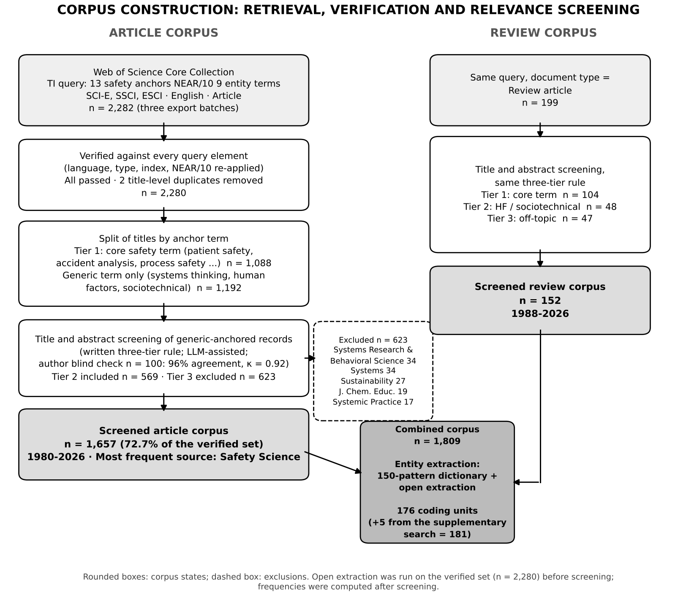
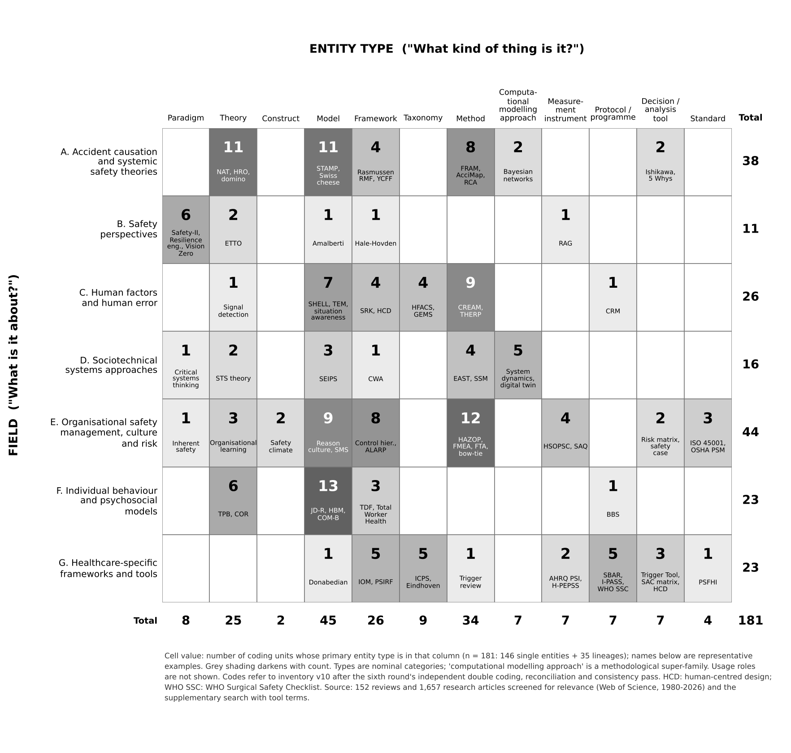
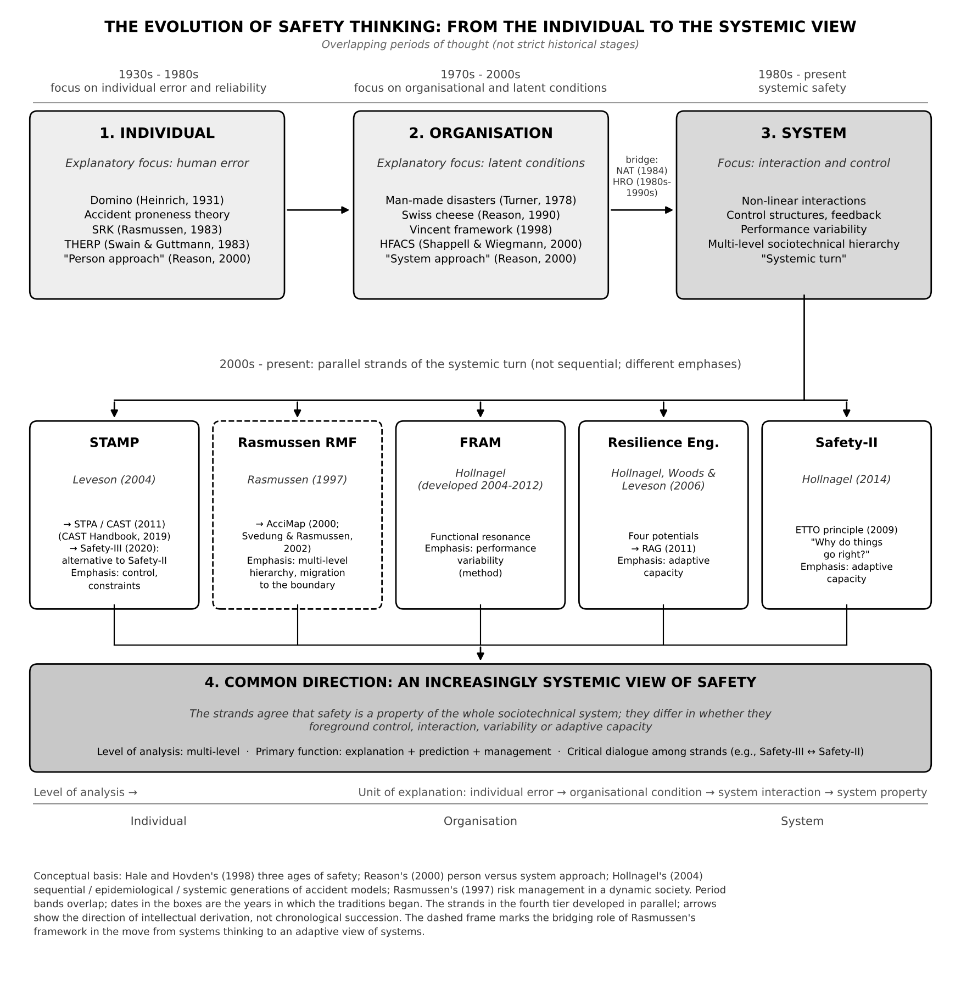
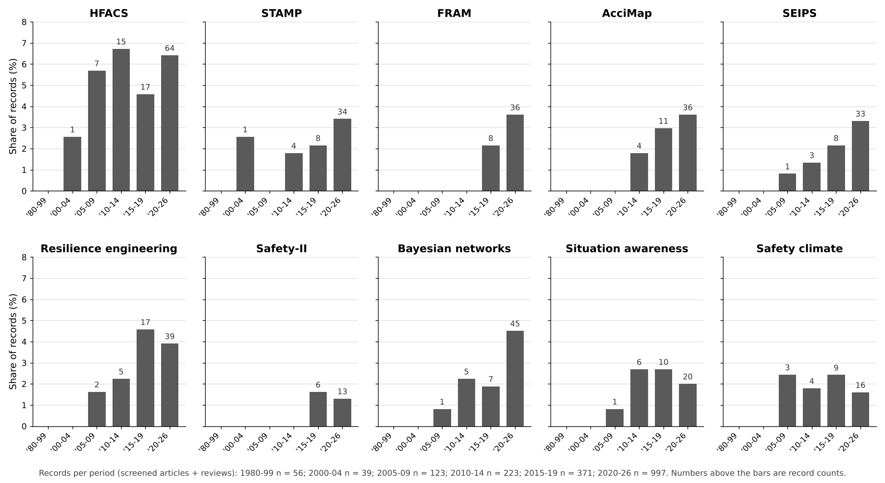
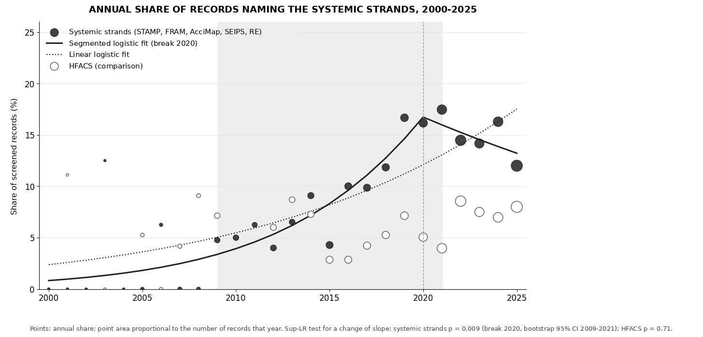
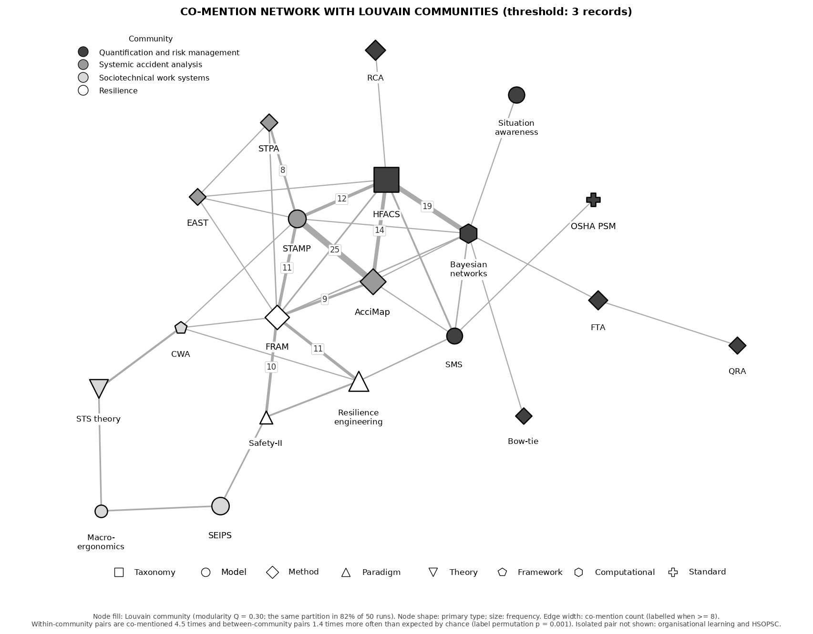
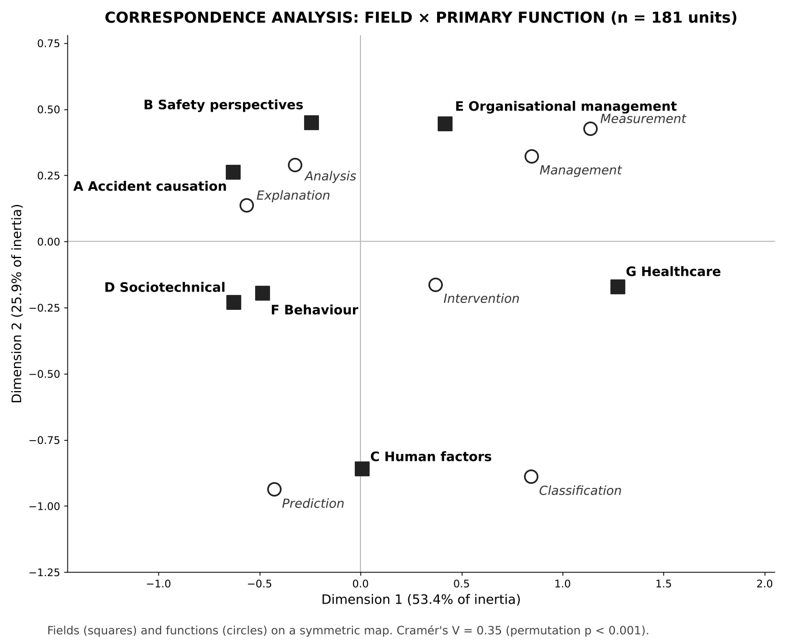

Preprint, not peer reviewed. Author's manuscript, English version, 13 November 2026. The companion open resource, the Safety Science Entity Atlas, presents every coded unit with a schematic diagram (doi:10.5281/zenodo.23138415). Please cite this text as a preprint.
Mehmet Nurullah Kurutkan
Düzce University, Faculty of Business, Department of Health Management, Düzce, Türkiye
ORCID: 0000-0002-3740-4231 · Web of Science ResearcherID: IUN-1065-2023
Safety science names its knowledge objects inconsistently: paradigms, theories, models, methods, taxonomies, measurement instruments and standards are often listed together under the single heading of "models", which hides what each can and cannot do. This study treats the problem as one of knowledge organisation and develops a two-axis taxonomy that codes each entity by the field it addresses and by the kind of knowledge object it is, together with level of analysis, temporal orientation and primary function. Entities were extracted from 1,809 Web of Science records (1,657 articles and 152 reviews, 1980-2026) that name a safety concept together with a model, framework, theory or method in the title and were screened for relevance, and the scheme was refined through six documented critique rounds, the last of which included independent double coding of a stratified sample. The inventory comprises 181 units of analysis in twelve entity types (146 single entities and 35 merged entity lineages; five were identified through a supplementary search); 133 are observed in the main corpus, 8 only in the supplementary search, and 40 are known only from the canonical literature. Two independent coders reproduced field, entity type, level of analysis and primary function with Cohen's kappa values between 0.67 and 0.89, whereas temporal orientation and the secondary usage role were less reliable; a pre-specified retest of clarified rules on 30 new units improved agreement (Krippendorff's alpha from 0.45 to 0.66 for orientation and from 0.13 to 0.39 for usage role) but did not fully meet the pre-specified criteria. Three findings stand out. First, field and primary function are associated (Cramér's V = 0.35, a large effect for a table of this size): accident causation units concentrate on explanation and analysis, organisational management units on management and measurement, human factors units on prediction and classification, and healthcare-specific units on classification, measurement and management, and the pattern persists in the observed layer and when lineages are excluded. Second, the share of records naming the systemic strands rose steadily from the mid-2000s and levelled off around 2020 (segmented logistic regression, p = 0.009); there is no break in 2015. Third, the co-mention network forms four recurring communities whose within-community association is more than four times the chance level and robust to changes of threshold, whereas behavioural and healthcare units remain at the periphery at every threshold. A supplementary search with tool, instrument and standard terms did not materially change these structural relations, but it added five entities and showed that measurement instruments, protocols and standards are undercounted. The taxonomy, coding rules and inventory are offered as a reusable tool for method selection, curriculum design and evidence synthesis.
Keywords: safety science; accident causation models; taxonomy; human factors; patient safety; resilience engineering; systems thinking; bibliometric review
Every discipline that matures beyond its founding metaphors eventually has to take stock of its conceptual equipment. In safety science that equipment is unusually large and unusually mixed. A single review may present Heinrich's domino sequence, Reason's Swiss cheese, Rasmussen's risk management framework, the Systems-Theoretic Accident Model and Processes (STAMP), the Functional Resonance Analysis Method (FRAM), the Human Factors Analysis and Classification System (HFACS), the Systems Engineering Initiative for Patient Safety (SEIPS), the Job Demands-Resources model, the Hospital Survey on Patient Safety Culture and ISO 45001, all under the same generic heading of "models" (Hollnagel, 2004; Salmon et al., 2012; Underwood and Waterson, 2013; Hulme et al., 2019). The heading is convenient but misleading. A paradigm, an explanatory theory, a representational model, an analysis method, a classification scheme, a survey instrument and a management standard are not the same kind of thing, do not answer the same question and cannot be judged by the same criteria (Nickerson et al., 2013; Aven, 2014).
The consequences of this conflation are practical as well as conceptual. Educators who must decide which twenty or thirty "models" an undergraduate should learn lack a principled basis for the list. Practitioners asked to select an investigation method are offered a menu in which retrospective and prospective tools sit beside theories that prescribe no procedure at all. Reviewers who count "applications of systems thinking accident analysis methods" must decide case by case whether AcciMap is a method or a model and whether HFACS belongs in the same category as STAMP (Salmon et al., 2012; Hulme et al., 2019; Delikhoon et al., 2022). Earlier attempts to organise the field have been valuable but partial. Hollnagel's (2004) sequential, epidemiological and systemic generations classify accident models by their basic assumptions about causality, but say nothing about human factors methods, culture measurement instruments or management systems. Hale and Hovden's (1998) three ages of safety order the field historically. Katsakiori et al. (2009) and Sklet (2004) compare investigation methods against causation models. Swuste et al. (2014) trace the theories, models and metaphors of occupational safety across three post-war decades. The healthcare literature has produced its own inventories of contributory factor frameworks, work system models and patient safety classifications (Vincent et al., 1998; Carayon et al., 2006, 2020; Holden et al., 2013; Lawton et al., 2012; World Health Organization, 2009). None of these efforts cuts across the whole field, and none separates the two questions that a usable taxonomy must keep apart: what is this entity about, and what kind of entity is it?
This study addresses that gap and makes three contributions. The first is conceptual: it separates the field an entity addresses from its status as a knowledge object, so that a paradigm, a theory, a model, a method, a taxonomy, a measurement instrument, a protocol and a standard are no longer compared as if they were things of the same kind. The second is methodological: it operationalises entity typing as a reproducible coding procedure with decision questions for each type, explicit ending conditions, an audit trail of six critique rounds, independent double coding of a stratified sample with agreement statistics for every dimension, and sensitivity analyses that test whether the main findings depend on how the unit of analysis is defined and on the search terms. The third is empirical: within the literature that explicitly names safety concepts together with models, frameworks, theories or methods in the title, it maps how the traditions of safety science differ in the types of knowledge object they produce and in how far their entities are combined with one another. Taken as a whole, the study is less an inventory than a meta-scientific analysis of the knowledge objects of safety science.
The contribution is therefore not a new accident model but a meta-level tool. The taxonomy proposed here is deliberately nominal rather than hierarchical: no type is placed above another, and the same entity may legitimately carry a primary and a secondary type. This design choice, which emerged from the critique rounds described in Section 3, resolves a recurring difficulty of earlier classifications: entities such as HFACS (a taxonomy also used as an investigation method) or FRAM (a method whose output is also called a model) resist assignment to a single category.
The argument can be stated as four research questions. RQ1: When the corpus is defined reproducibly and screened for relevance, which named knowledge objects does the safety science literature that explicitly names them in the title work with, and how do they divide into entities observed in that literature and entities known only from the canon? RQ2: Which classification structure can distinguish the field an entity addresses from the kind of knowledge object it is, while accommodating hybrid entities without leaving a residual category? RQ3: How do the fields differ in the types, levels of analysis, temporal orientations and primary functions of their entities, and how robust are these differences to the definition of the unit of analysis? RQ4: How have the most prominent entities diffused over time, and which co-mention structure characterises their integration across fields? RQ1 is answered in Sections 3.2-3.4, 4.1, 4.2 and 4.5; RQ2 in Sections 3.5, 3.6, 4.2, 4.3 and 4.12; RQ3 in Sections 4.3, 4.4, 4.10 and 4.13; and RQ4 in Sections 4.8, 4.9 and 4.11.
The timing of this study is not accidental. Three developments make an explicit inventory of the conceptual equipment of safety science more valuable today than a decade ago. First, the volume of publications naming a model or method in the title has increased tenfold since 2010; the knowledge of "what is out there" that senior researchers once carried in their heads no longer scales. Second, the systemic turn has produced a set of parallel and partly competing approaches whose relations are contested within the literature itself (Le Coze, 2013, 2022; Leveson, 2020; Provan et al., 2020); a taxonomy that records not only what each approach claims but what it is is a precondition for settling these debates. Third, evidence synthesis is increasingly supported by computational methods that require machine-readable vocabularies; an entity taxonomy with explicit patterns, types and functions is the kind of artefact such methods can consume, whereas a list in prose is not. Section 5.8 returns to this last point.
The most widely adopted ordering of accident models is Hollnagel's (2004) distinction between sequential, epidemiological and systemic models. Sequential models, exemplified by Heinrich's (1931) domino theory and its successors in loss causation and energy transfer theory (Bird and Germain, 1985; Haddon, 1973), describe accidents as linear chains of discrete events and support analysis techniques such as fault tree, event tree and root cause analysis. Epidemiological models, associated above all with Reason (1990, 1997) and anticipated by Turner's (1978) account of disaster incubation, treat accidents as the outcome of latent organisational conditions combining with active failures; they underpin the Swiss cheese model, HFACS (Shappell and Wiegmann, 2000) and the contributory factor frameworks of healthcare (Vincent et al., 1998; Lawton et al., 2012). Systemic models, developed from Rasmussen's (1997) risk management framework, Leveson's (2004) STAMP and Hollnagel's (2004, 2012) FRAM, abandon the notion of a root cause altogether and locate accidents in the dynamics of control, feedback and performance variability across a sociotechnical hierarchy.
This ordering is well supported by empirical reviews. Hulme et al. (2019) found that applications of systems thinking accident analysis methods increased steadily between 1990 and 2018 and concentrated on AcciMap, STAMP and FRAM; Patriarca et al. (2020, 2022) documented the cross-domain diffusion of FRAM and STAMP; and Delikhoon et al. (2022) confirmed the same pattern for sustainable safety management. Yet the generational scheme classifies accident models only. It has no place for the human reliability methods that quantify error probabilities (Swain and Guttmann, 1983; Hollnagel, 1998), for the constructs and measurement instruments of safety climate and culture (Zohar, 1980; Guldenmund, 2000; Cooper, 2000), for behavioural theories imported from health psychology (Bakker and Demerouti, 2007; Griffin and Neal, 2000), or for the standards and management systems that regulate practice.
A second ordering is historical. Hale and Hovden (1998) identified three ages of safety: a technical age concerned with hardware and physical guarding, a human factors age concerned with the operator, and a management age concerned with safety management systems and culture. Reason (2000) distinguished the person approach, which locates error in the individual, from the system approach, which locates it in the conditions under which people work. Both accounts describe an outward movement of the explanatory unit from the individual to the organisation and the system. The most recent phase of this movement, sometimes called the systemic turn, is not a single school. It comprises the control-theoretic lineage of STAMP, STPA and CAST (Leveson, 2004, 2011), the dynamic society lineage of Rasmussen and AcciMap (Rasmussen, 1997; Svedung and Rasmussen, 2002), the resonance lineage of FRAM (Hollnagel, 2012), resilience engineering (Hollnagel et al., 2006; Woods, 2015), the Safety-I/Safety-II distinction (Hollnagel, 2014) and the account of drift into failure (Dekker, 2011). These strands developed in parallel and in mutual critique; Leveson's (2020) Safety-III, for example, is explicitly presented as an alternative to Safety-II rather than as its successor. Any figure that arranges them along a single line therefore misrepresents the field (Le Coze, 2022).
What neither ordering addresses is the mixing, within a single list, of entities of different scientific status. The problem has been recognised in neighbouring fields. In information systems, Nickerson et al. (2013) argued that a taxonomy should be built on explicit dimensions with mutually exclusive and collectively exhaustive characteristics, and that a dimension should answer one question only. In organisation studies, Bailey (1994) distinguished typologies (conceptual, deductive) from taxonomies (empirical, inductive) and warned against mixing levels of abstraction. Safety science has been slower to apply such discipline to its own inventory. Waterson et al. (2015), examining the methodological challenges of the science of sociotechnical systems and safety, observed that the field lacks agreed criteria for what counts as a method; Aven (2014) and Hopkins (2014) noted that safety science borrows theories from many disciplines but has no shared vocabulary for classifying what it borrows. The taxonomy developed here builds on the two-question principle of Nickerson et al. (2013): one axis for the field of application, one axis for the entity type, and no attempt to compress one into the other.
It is useful to set out precisely what existing classifications attempt and what they do not, because this study is positioned in the space they leave open. Table 1 summarises eight influential inventories and comparisons by the universe of entities they cover, the dimensions they use, whether they distinguish entity types, and whether they are derived from a defined corpus or from expert selection. Two patterns are visible. The inventories that classify most systematically (Hollnagel, 2004; Katsakiori et al., 2009; Underwood and Waterson, 2013; Hulme et al., 2019) restrict themselves to accident models and investigation methods, so their dimensions do not carry over to measurement instruments, standards or behavioural theories. The inventories that range more widely (Hale and Hovden, 1998; Swuste et al., 2014; Waterson et al., 2015; Le Coze, 2013) are historical or discursive and do not code entities on explicit dimensions. None of the eight distinguishes entity type as a coding dimension, and only Hulme et al. (2019) builds its universe from a defined bibliographic search. The gap, then, is not a lack of classification but the lack of a classification that is at once field-wide, dimensional, type-sensitive and corpus-based.
Table 1. Scope and design of eight earlier inventories and comparisons of safety science models and methods.
| Source | Universe covered | Classification dimension(s) | Distinguishes entity types? | How the universe is defined |
|---|---|---|---|---|
| Hale and Hovden (1998) | Approaches to the organisational aspects of safety, health and environment | Historical age (technical, human factors, management) | No | Expert narrative |
| Hollnagel (2004) | Accident models | Assumed causality (sequential, epidemiological, systemic) | No (models only) | Expert selection |
| Sklet (2004) | Accident investigation methods (14) | Method characteristics; level of analysis | Partly (method and model) | Expert selection |
| Katsakiori et al. (2009) | Investigation methods against causation models | Alignment of method with model | Partly | Expert selection |
| Underwood and Waterson (2013) | Systemic accident analysis (AcciMap, STAMP, FRAM) | Research-practice gap; usability | No | Expert selection |
| Swuste et al. (2014) | Occupational safety theories, models and metaphors, 1945-1975 | Historical period; country | Partly (theory, model, metaphor) | Literature review |
| Waterson et al. (2015) | Methods for sociotechnical systems and safety science | Methodological challenges | No | Expert panel |
| Hulme et al. (2019) | Applications of systems thinking accident analysis methods, 1990-2018 | Method; domain; year | No (methods only) | Systematic search |
| This study | 181 units in seven fields | Field; family; primary and secondary entity type; level; orientation; function | Yes (twelve types) | Reproducible search, verified and screened |
Because the entity type axis is the main instrument of the study, its categories need a defensible basis outside safety science. The philosophy of science provides one. Morgan and Morrison (1999) argue that models are neither theory nor data but autonomous mediating instruments: they are built from theory and from the world, are partly independent of both, and function as instruments of investigation. On this view a model such as the Swiss cheese metaphor is not a weaker kind of theory; it is a different kind of object, judged by its power of representation and discovery rather than by its truth. Theories are sets of propositions with explanatory scope and boundary conditions (Whetten, 1989), and Gregor (2006) usefully distinguishes theories for analysing, explaining, predicting and designing, a distinction that the primary function dimension of the present scheme operationalises. As Doty and Glick (1994) showed, typologies are a legitimate form of theory when their ideal types are specified along explicit dimensions; this is why the taxonomies in the present inventory (HFACS, the WHO classification) are treated as scientific entities in their own right and not as mere record keeping. Kuhn's (1970) conception of a paradigm as a disciplinary matrix of shared exemplars and commitments grounds the paradigm type: Safety-II and resilience engineering are stances on what safety is and how it should be studied, not propositions to be tested. Methods, finally, are procedures with defined steps whose output is an analysis or a design; the coding rule that "a method is not its own output" is meant to prevent exactly the confusion of a method with the representations it produces. The twelve entity types are therefore not an arbitrary list; they correspond to distinctions that the philosophy and methodology of science draw for other reasons, and this is the strongest evidence that they can be carried beyond the corpus that produced them. Constructs are understood in the sense of Cronbach and Meehl (1955) as theoretically defined and mostly latent attributes inferred from observable indicators; normative principles such as ALARP are treated as frameworks, because they specify what should be considered without forming a disciplinary matrix; and stances such as Vision Zero and inherent safety, which redefine what counts as acceptable safety and steer whole programmes of design, regulation and research, are treated as paradigms (Section 3.5). Protocols and decision tools are separated by what they regulate: a protocol sets the sequence of actions in a task, whereas a decision tool supports a single judgement within a wider procedure (Cox, 2008).
The study combines a structured bibliographic search with dictionary-based and open entity extraction, followed by taxonomy development through iterative critique. It follows the spirit of PRISMA 2020 (Page et al., 2021) for the reporting of the search and screening stages, and the taxonomy development method of Nickerson et al. (2013), which alternates conceptual (deductive) and empirical (inductive) passes until a set of ending conditions is met. The unit of analysis is a named entity, defined as a paradigm, theory, construct, model, framework, taxonomy, method, computational modelling approach, measurement instrument, protocol or programme, decision or analysis tool, or standard that the literature refers to by a proper name or a stable acronym.
The Web of Science Core Collection (Science Citation Index Expanded, Social Sciences Citation Index and Emerging Sources Citation Index) was searched on 21 September 2026. A proximity query on the title field was used so that the retrieved records would be those in which a safety science concept and a model or method concept are the joint subject of the paper, rather than co-occurring incidentally in the abstract. Thirteen anchor terms representing the subfields of safety science were combined with nine terms denoting the entity types sought, within ten words of each other (NEAR/10) (Table 2). Results were limited to English-language articles and review articles; letters, editorials, data papers, book chapters, proceedings papers and retracted or flagged publications were excluded. No date limit was applied; the earliest retained record dates from 1980, and the latest carries a 2026 early access date with a 2027 volume assignment.
Table 2. Search strategy and corpus composition.
| Item | Specification |
|---|---|
| Database | Web of Science Core Collection: SCI-EXPANDED, SSCI, ESCI |
| Field searched | Title (TI) |
| Safety anchor terms (group A) | "safety science", "system safety", "systems safety", "patient safety", "occupational safety", "process safety", "human factors", "resilience engineering", "systems thinking", "sociotechnical system*", "socio-technical system*", "accident causation", "accident analysis" |
| Entity terms (group B) | model*, framework*, theor*, method*, approach*, taxonomy, taxonomies, classification*, "analysis technique*", "assessment method*" |
| Proximity operator | A NEAR/10 B |
| Language | English |
| Document types retained | Article (including early access); Review article (separate corpus) |
| Document types excluded | Letter, editorial, data paper, book chapter, proceedings paper, retracted publication, publication with expression of concern |
| Article corpus | 2,282 records exported in three batches; 2 title-level duplicates removed (one early access/final pair, one pair of doubly indexed articles); 2,280 unique records screened; 623 records excluded for off-topic use of generic anchor terms; n = 1,657 |
| Review corpus | 199 records screened at title and abstract level; 152 included; 47 excluded for off-topic use of broad anchor terms |
| Search date | 21 September 2026 |
| Supplementary search (Section 3.12) | tool*, instrument*, scale*, questionnaire*, protocol*, standard*, guideline*, checklist* in place of group B; records matching the original query excluded with NOT; articles and reviews; 758 records, 721 in English, 671 after screening |
Both corpora were first verified and then screened for relevance. Verification re-tested each of the 2,282 exported article records programmatically against every element of the strategy (language, document type, index membership, and the title-level NEAR/10 condition re-implemented as a token distance test with the same wildcard semantics); all records passed, and the two title-level duplicates were resolved by keeping the record with the more complete bibliographic data, leaving 2,280 unique articles. Verification shows that the records meet the pre-defined query criteria; it does not show that they are about safety science, because three of the thirteen anchor terms ("systems thinking", "human factors" and "sociotechnical/socio-technical system") are also used outside the field.
Relevance screening therefore applied the same three-tier decision rule to both corpora. Records whose title contained one of ten core safety science anchor terms (for example "patient safety", "accident analysis", "process safety") were included without further review (tier 1). Records anchored only by a generic term were read at title and abstract level and included if the paper addressed human factors and ergonomics as a discipline, the design or analysis of sociotechnical work systems, or the safety, risk, reliability or resilience of engineered or organisational systems (tier 2); they were excluded if the generic term was used in an unrelated sense, for example systems thinking in sustainability, agriculture, tourism, chemistry education or public health governance, or "human factors" in the sense of anthropogenic or demographic factors (tier 3); borderline cases were included. In the article corpus, 1,088 records are tier 1 and 1,192 records are anchored only by a generic term, of which 569 were included (tier 2) and 623 excluded (tier 3), leaving 1,657 articles (72.7% of the verified set). In the review corpus, 104 records are tier 1, 48 tier 2 and 47 tier 3, leaving 152 reviews. Tier 2/tier 3 decisions in the article corpus were made with the assistance of a large language model classifier applying the written rule; the author independently screened a stratified random sample of 100 generic-anchored records (50 with and 50 without a safety-related term in the abstract), blind to the classifier's decision, and obtained 96% agreement (Cohen's kappa = 0.92). For both corpora, decisions and reasons were logged per record and are provided as supplementary material. Excluded article records are dominated by Systems Research and Behavioral Science (34), Systems (34), Sustainability (27), Journal of Chemical Education (19) and Systemic Practice and Action Research (17), which confirms that the exclusions removed a systems thinking literature outside safety science rather than safety papers. Figure 1 summarises the construction of both corpora from retrieval to the combined set of 1,809 records. The classifier was a Claude large language model (Anthropic) accessed in the author's research environment in September 2026. The model received the written rule verbatim, with the title, source, keywords and abstract of each record, in six batches of about 200 records, and returned a tier and a one-sentence reason; each record was classified once without repeated sampling, so the reliability estimate is the author's blind check. Borderline cases were resolved towards inclusion, and the author's decision prevailed wherever it differed from the classifier's. The rule text, model identifier, batch structure and per-record decisions are documented in the supplementary workbook.

Named entities were extracted from the concatenated title, abstract, author keywords and Keywords Plus fields of every record in both screened corpora; the open extraction pass described below was run on the full verified set before screening so that candidate entities would not be lost, and frequencies were computed on the screened corpora. Extraction proceeded in two passes. The first applied a curated dictionary of 150 regular expression patterns covering the models, frameworks, methods and measurement instruments known from the reviews cited in Section 2 and from standard human factors and safety management reference works (Stanton et al., 2013; Hollnagel, 2004; Reason, 1997). Each pattern was written to capture the canonical name, the common acronym and the main spelling variants (for example "sociotechnical" and "socio-technical"; "Swiss cheese" with or without a hyphen) and to avoid matching generic words: the pattern for CAST, for instance, required co-occurrence with STAMP or "causal analysis" within forty characters, and the pattern for HEART required a following method or human error term.
The second pass was open rather than dictionary-driven and was designed to surface entities that the dictionary missed. Two extractors were run on the same text: one collected every parenthetical acronym of three to ten characters, ranked them by frequency and discarded a stop list of database, statistical, institutional and disease acronyms; the other collected every capitalised phrase of one to four words immediately followed by Model, Framework, Method, Methodology, Theory, Analysis, System, Approach, Technique, Diagram, Matrix, Grid, Ladder, Taxonomy, Classification, Protocol, Cycle or Tool, and discarded generic openings. Candidates occurring three or more times were examined in context (a 220-character window around the first occurrence) and were either added to the inventory with a purpose-written pattern or rejected as non-entities. This pass added, among others, Soft Systems Methodology (Checkland, 1981), the Viable System Model, Critical Systems Thinking, the Vanguard Method, Actor-Network Theory, Object-Process Methodology, the COM-B model and the Theoretical Domains Framework (Michie et al., 2011), the Consolidated Framework for Implementation Research (Damschroder et al., 2009), the Learning Health System and complex network-based accident causation models. Seven of these candidates (among them Critical Systems Thinking and the Vanguard Method) occur only in records that relevance screening later excluded; they were retained in the inventory as canonical entities with a screened corpus frequency of zero, and their raw frequency is reported beside them in the supplementary workbook. The effect of the three-occurrence threshold on sensitivity is estimated with a sensitivity analysis (Section 3.11).
Entity frequency is reported as the number of records in each screened corpus in which the entity's pattern matched at least once. These counts are indicators of prominence within a title-restricted, relevance-screened corpus, not citation counts, and they are interpreted accordingly in Section 5.
The coding scheme was developed iteratively. The initial one-axis scheme grouped entities by subject into seven fields and fifteen subfields. This version was subjected to six structured critique rounds in which each version of the scheme, the coded inventory and the accompanying figures was examined against explicit criteria (internal consistency, mutual exclusivity of categories, fidelity to the primary literature and chronological accuracy), objections were itemised in writing, and each objection was either accepted with a documented change or rejected with a documented reason. The change log of the first five rounds is provided as supplementary material; the changes of the sixth round are reported in Table 3, Section 3.6 and Section 4.12.
The first round identified the conflation problem described in Section 2.3 and led to the introduction of a second, independent axis for entity type. The second round established the coding rule that the primary type records the entity's essential identity in the literature and the secondary type a documented additional use, and added three further dimensions, level of analysis, temporal orientation and primary function, so that the scheme could distinguish, for example, root cause analysis (retrospective) from failure mode and effects analysis (prospective), or an explanatory theory from a measurement instrument. The third round addressed remaining defects and triggered the relevance screening of the article corpus reported in Section 3.3: rows that still held independent entities together (for example the risk matrix and the ALARP principle, or ICAO's safety management system framework, ISO 45001 and the ILO-OSH 2001 guidelines) were split; a construct type was added for entities that are neither theory nor model, such as safety climate (Zohar, 1980) and psychological safety (Edmondson, 1999); an event/process level was added for classification systems whose unit of analysis is an event rather than an actor; a non-directional value was added so that temporal orientation would not be forced on paradigms and theories; and umbrella terms such as "systems thinking" and "safety culture" were removed as entities and kept only as field or family labels. The scheme was accepted as final at the point where a full pass over the inventory produced no further splits, merges or type changes (the ending condition of Nickerson et al., 2013). The fourth round, triggered by critiques of the operational definitions in an external review, tested each type against a distinguishing criterion phrased as a decision question (Table 5) and grounded each definition in an established source (Cronbach and Meehl, 1955; Jabareen, 2009; Nilsen, 2015; ISO/IEC, 2004). This round made five changes. The construct type was restricted to theoretically defined and mostly latent attributes operationalised through indicators; the ALARP principle, a risk acceptance criterion rather than a construct, was recoded as a framework with standard as secondary type. Vision Zero and inherent safety, which function as a normative strategy and a set of design principles rather than as disciplinary matrices in Kuhn's (1970) sense, were recoded from paradigm to framework with paradigm as secondary type (a decision reversed in the sixth round, see below). The tool/protocol type, which held ontologically different objects together, was split into protocols and programmes that specify how a task is carried out (SBAR, I-PASS, crew resource management, TeamSTEPPS) and decision and analysis tools that support a single judgement or analytic step (the risk matrix, the Ishikawa diagram, 5 Whys, the incident decision tree, the safety assessment code matrix, the Global Trigger Tool and the safety case); once this heterogeneity was shown, there was no scientific reason to keep the number of types at eleven. Finally, two coding rules were made explicit (Section 3.6). The ending condition was then re-applied to the twelve-type scheme and met. The fifth round, triggered by an external review of the evidence architecture, redefined the secondary type as a documented usage role, separated the observed and canonical layers of units, and added the robustness analyses of Section 3.11. This round changed one secondary assignment (FRAM, see Section 3.6) and no primary type. Table 3 reports each round in the form recommended by Nickerson et al. (2013): the direction of the iteration, what triggered it, what changed and whether the objective and subjective ending conditions were met. The sixth round tested whether the coding could be reproduced by others and whether the inventory depended on the search terms. Two coders who had not been involved in developing the scheme coded a stratified sample of 55 units (31% of the 176 units then in the inventory) independently of each other and of the author (Section 3.10; results in Section 4.12). The 131 assignments on which at least one coder departed from the author were reconciled by the author with a written reason for each; 71 codes were changed, 47 of them to the code that both coders had given. The two dimensions on which disagreement was systematic, temporal orientation and usage role, received clarified rules in the second version of the codebook (Section 3.6), and the clarified rules were applied to the 121 units outside the sample in a consistency pass that changed a further 50 codes. This round reversed one decision of the fourth round: both independent coders coded Vision Zero as a paradigm; at reconciliation, Vision Zero and, for consistency, inherent safety were returned to the paradigm type without a secondary role, because they redefine what counts as acceptable safety for an entire programme of design and regulation rather than listing dimensions to consider. A supplementary search with tool, instrument, scale, protocol and standard terms (Section 3.12) added five entities and extended two units to lineages. The name of field B was changed from "safety paradigms" to "safety perspectives" so that no field shares its name with an entity type. The ending conditions were re-applied to the resulting 181-unit inventory and met. These conditions concern the saturation of dimensions and characteristics, not the exhaustion of the universe of entities: new units can be added to a finished taxonomy without changing its structure, and the sixth round did exactly that.
Table 3. Taxonomy development by round, following Nickerson et al. (2013).
| Round | Approach | Trigger | Main changes | Objective ending conditions | Subjective ending conditions |
|---|---|---|---|---|---|
| 1 | Conceptual to empirical | One-axis grouping by subject mixed entities of different status | Second, independent axis for entity type | Not met (dimension added) | Not met (not robust) |
| 2 | Empirical to conceptual | Hybrid entities (HFACS, SEIPS, bow-tie) | Primary/secondary type rule; level, orientation and function added | Not met (dimensions added) | Partly (not comprehensive) |
| 3 | Empirical to conceptual | Merged rows; unassignable entities; umbrella terms | Rows split; construct type, event/process level and non-directional value added; umbrella terms removed; corpus screened | Not met (characteristics added) | Met except extendibility |
| 4 | Conceptual to empirical | External review of operational definitions | Decision questions and sources for every type; ALARP, Vision Zero and inherent safety recoded; tool/protocol split | Not met (characteristic split) | Met |
| 5 | Empirical to conceptual | External review of the evidence architecture | Secondary type redefined as usage role; FRAM's secondary role removed; observed and canonical layers | Met | Met |
| 6 | Empirical to conceptual | Independent double coding; supplementary search with tool terms | 71 codes changed at reconciliation and 50 in the consistency pass; codebook version 2 (orientation, usage role, A/D boundary); Vision Zero and inherent safety returned to paradigm; five entities added, two lineages extended | Met (units added; no dimension or characteristic added) | Met |
Note: Objective ending conditions: all units examined; no unit merged or split and no dimension or characteristic added in the round; every characteristic used by at least one unit; dimensions and characteristics unique. Subjective ending conditions: concise, robust, comprehensive, extendible and explanatory (Nickerson et al., 2013).
Table 4 summarises the seven coding dimensions and their permitted values; Table 5 defines the twelve entity types. Three rules deserve emphasis. First, the types are nominal categories with no ordinal meaning: a standard is not "above" a method, nor a taxonomy "below" a model. Eleven of the twelve types are distinguished by what kind of object the entity is; the twelfth, the computational modelling approach, is a methodological super-family kept in the same column for operational convenience, which is why the axis is called entity type rather than ontological type. Second, an entity is assigned to the field in which it was developed or to which it essentially belongs, not to every field in which it is applied; SEIPS is therefore coded to sociotechnical systems, although its applications are almost entirely in healthcare. Third, a method is not the same entity as its output: FRAM is coded as a method, and "the FRAM model of process X" is treated as an instance produced by the method, not as a separate entity. The same rule applies to STPA, CAST and HFACS. Two further rules were added in the fourth critique round. Fourth, how the original source describes an entity is the first evidence for its type, but it is overridden when it contradicts the distinguishing criterion in Table 5: SEIPS, presented by its authors as a model, is coded as a model, and CFIR as a framework; the hierarchy of controls, which lists risk control strategies rather than representing a phenomenon, is coded as a framework. Fifth, computational modelling approaches are coded at the level of the approach family (Bayesian network modelling, system dynamics, agent-based modelling, digital twins); a specific model built with such an approach, for example a Bayesian network of medication errors, is an instance of the family and is counted under it rather than as a separate model, so that the same object cannot be coded twice. The fourth rule treats self-description as evidence and operational properties as the classification criterion: the scheme does not claim to know better than its authors what an entity is; it records what the entity does in the terms of Table 5 and reports both when the two diverge. Finally, the secondary type is called the documented usage role in this version, to make clear that it records how an entity is used rather than a second identity. Under the rule that a method is not its own output, FRAM has no secondary role, because the models it produces are instances of its use rather than a second entity type. The sixth round made three rules explicit (codebook version 2). Temporal orientation records where the original design purpose of the entity places it relative to an adverse event: "mixed" is used only when the original source designed the entity for both pre-event and post-event use (for example the Haddon matrix, CREAM and leading and lagging indicators), and documented later uses do not make an entity mixed; "non-directional" applies to every entity, whatever its type, that is not positioned relative to a particular adverse event (including explanatory models, culture measures and frameworks); and "real-time" is reserved for entities whose defining feature is use during the work itself (SBAR, I-PASS, the WHO Surgical Safety Checklist, digital twins), with training programmes coded as prospective. A usage role is coded only when the original source or the wider literature explicitly uses the entity under the name of that type (for example "the bow-tie model" or "Endsley's theory of situation awareness"); the presence of a type word in the entity's name is not sufficient, and the rule that a method is not its own output also applies to usage roles. The boundary between fields A and D was also fixed: field A holds entities whose primary object is the causation or investigation of accidents and adverse events, including systemic accident analysis methods (STAMP, AcciMap, FRAM, Rasmussen's framework); field D holds entities whose primary object is the design and functioning of sociotechnical work systems, together with general system modelling approaches that are not specific to accidents (system dynamics, agent-based modelling, Petri nets); prospective risk assessment methods (HAZOP, FMEA, fault tree and event tree analysis, bow-tie) belong to the risk assessment family of field E, and human error taxonomies (HFACS, GEMS) to field C.
Table 4. The seven coding dimensions.
| Dimension | Question answered | Values |
|---|---|---|
| 1. Field | What is it about? | A Accident causation and systemic safety theories; B Safety perspectives; C Human factors and human error; D Sociotechnical systems approaches; E Organisational safety management, culture and risk; F Individual behaviour and psychosocial models; G Healthcare-specific frameworks and tools |
| 2. Conceptual family | In which tradition of thought? | Nineteen subfields (A1 to G3), for example A1 sequential, A2 epidemiological/organisational, A3 systemic, A4 computational; E1 culture and climate, E2 management systems, E3 risk assessment, E4 improvement and implementation |
| 3. Primary type | What kind of thing is it? | Twelve nominal types (Table 5) |
| 4. Secondary role (usage role) | What other documented function does it serve? | Any of the twelve types, or none; at most one; coded only when the entity is explicitly used under the name of that type |
| 5. Level of analysis | Whose behaviour or which unit does it address? | Individual; Team; Organisation; System; Multi-level (explicitly models the hierarchy from regulator to operator); Event/process |
| 6. Temporal orientation | When is it applied relative to an adverse event? | Retrospective; Prospective; Real-time (defining feature is use during work); Mixed (designed for both pre-event and post-event use); Non-directional (not positioned relative to a particular adverse event) |
| 7. Primary function | What was it designed for? | Explanation; Classification; Analysis; Measurement; Prediction; Intervention; Management |
Table 5. Definitions and distinguishing criteria of the twelve entity types (nominal, non-hierarchical).
| Type | Definition | Distinguishing criterion (decision question) | Examples | Source |
|---|---|---|---|---|
| Paradigm | A high-level stance that defines what safety is and how it should be pursued; a disciplinary matrix of problems, exemplars and values shared by a research community | "How should we look at safety?" Does not explain a single phenomenon; sits above theories and methods | Safety-II, resilience engineering (borderline case), Safety Differently, Vision Zero, inherent safety | Kuhn (1970) |
| Theory | A body of testable propositions that explains a class of phenomena | "Why or how does it happen?" Offers an explanatory mechanism; makes a stronger explanatory claim than a model | Normal Accident Theory, high-reliability organisation theory, theory of planned behaviour | Whetten (1989); Nilsen (2015) |
| Construct | A single measurable or observable concept; not itself a theory; restricted to theoretically defined, mostly latent attributes operationalised through indicators | "What abstract attribute do we want to measure?" A component of theory, not a system of explanation | Safety climate, psychological safety, normalisation of deviance | Cronbach and Meehl (1955) |
| Model | A conceptual representation of the structure or dynamics of a phenomenon, deliberately simplified for a particular purpose | "How do we represent reality?" Represents selected aspects; need not explain | Swiss cheese model, SEIPS, Job Demands-Resources model | Morgan and Morrison (1999); Nilsen (2015) |
| Framework | A structured set of dimensions or factors that guides practice, including regulatory frameworks and guidelines and normative principles and strategies | "Which dimensions should we consider?" Neither a causal explanation nor a representation | Vincent framework, hierarchy of controls, ICAO SMS framework, CFIR, ALARP | Jabareen (2009); Nilsen (2015) |
| Taxonomy | A classification system for events or factors | "Which class does it fall into?" Its output is a classification | HFACS, WHO ICPS, Eindhoven classification | Doty and Glick (1994); Nickerson et al. (2013) |
| Method | A procedure with defined steps for analysis, assessment or improvement | "How do we carry out the analysis or improvement?" Processes input through defined steps and produces an analysis | FRAM, STPA, HAZOP, FMEA, PDSA | Stanton et al. (2013) |
| Computational modelling approach | A methodological super-family for quantitative or simulation-based safety modelling; a methodological, not an ontological, category; coded at family level, with a specific model built with it counted as an instance | "How do we represent this algorithmically or by simulation?" Formal computation is required | Bayesian networks, system dynamics, agent-based models, digital twins | Winsberg (2010) |
| Measurement instrument | A survey, indicator set or assessment grid | "How much, at what level?" Its output is a score or data | HSOPSC, Safety Attitudes Questionnaire, MaPSaF, Resilience Assessment Grid, AHRQ Patient Safety Indicators | Mokkink et al. (2010) |
| Protocol/programme | A standard procedure, communication structure or training programme that specifies how a particular task is carried out | "Which steps are followed in practice?" Does not measure; regulates action; has no normative authority | SBAR, I-PASS, crew resource management, TeamSTEPPS, WHO Surgical Safety Checklist | Helmreich et al. (1999) |
| Decision/analysis tool | A practical device that supports a single judgement or analytic step (matrix, diagram, decision tree, trigger list, structured argument) | "Which judgement does it support?" Narrower than a method; does not prescribe a full procedure | Risk matrix, Ishikawa diagram, 5 Whys, incident decision tree, Global Trigger Tool, safety case | Cox (2008) |
| Standard | A normative management system standard or regulatory requirement | "Which requirement must be complied with?" Distinguished by the normative authority of a recognised body | ISO 45001, OSHA Process Safety Management, OSHA Laboratory Standard | ISO/IEC (2004) |
Note: The decision question in the third column is the operational test applied during coding; the source column gives the work from which the definition was adapted.
As a worked example of how the inventory can audit a teaching list (and not as a validity test, because the curriculum and the taxonomy share the same author), the inventory was matched against a 28-topic undergraduate curriculum on safety science models compiled by the author for a health management programme. The curriculum is typical of its kind: it runs from the Swiss cheese model and Reason's organisational accident model through HFACS, STAMP, SEIPS, FRAM, CREAM and AcciMap to safety culture maturity, behaviour-based safety, the Job Demands-Resources model and the health belief model. Each inventory unit was flagged as present in the curriculum, present in the corpus but absent from the curriculum, or present in the canonical literature but in neither.
All extraction and coding were carried out in Python 3.11 and pandas 3.0; figures were produced with matplotlib. The analyses are descriptive: frequency distributions on every dimension, cross-tabulations of field with type, level, orientation and function and of type with function, and corpus prominence per unit. Because the inventory is a census of a defined corpus rather than a sample, associations are summarised with effect sizes; the permutation and bootstrap p values reported below are used to scale the observed patterns against chance within the corpus, not to infer to a wider universe. The complete coded inventory is published in the open Safety Science Entity Atlas (see the Data availability section); coding rules, the change log and cross-tabulations are provided in the supplementary workbook.
Two families of analysis describe the dynamics and relational structure of the inventory. Diffusion was first described across six periods (1980-1999 and five-year bands from 2000-2004 to 2020-2026) as the share of screened records in each period that name a unit, so that the growth of the literature as a whole is separated from growth in the use of a particular entity (Rogers, 2003). Because period bands can produce apparent breaks, the annual share of records naming at least one of five systemic strands (STAMP, FRAM, AcciMap, SEIPS and resilience engineering) was modelled for 2000-2025 by binomial logistic regression on calendar year and compared with a segmented model allowing a single change of slope in an unknown year between 2006 and 2021 (Muggeo, 2003). The change was tested with the supremum likelihood ratio statistic (Andrews, 1993) against a parametric bootstrap of the no-break model (1,000 replications) that accounts for the search over candidate years, and a 95% interval for the location of the change was obtained by resampling records within years (500 replications); HFACS and Bayesian networks were modelled in the same way for comparison. Relational structure was examined as a co-word analysis (Callon et al., 1983). A binary record × unit matrix was built on the combined screened corpus for the thirty most prominent units (ties at the cut-off resolved alphabetically), pairs co-mentioned in at least three records were retained, and the network was drawn with the Kamada and Kawai (1989) algorithm. Communities were identified on the co-mention weights with the Louvain algorithm (Blondel et al., 2008) over 50 random seeds; the partition with the highest modularity is reported together with the share of runs that reproduced it, and its modularity was compared with 200 degree-preserving rewirings. Because small, dense networks reach high modularity even at random, within-community association was also tested directly: the lift of each pair (observed co-mentions divided by the number expected if the two units were mentioned independently) was compared within and between communities, with significance obtained from 5,000 permutations of the community labels. Brokerage was measured with weighted betweenness centrality (Freeman, 1977), with distances equal to inverse co-mention counts, and with the participation coefficient (Guimerà and Amaral, 2005), which measures how evenly a unit's ties are spread across communities. The network was re-estimated at thresholds of two and five co-mentions and on a backbone extracted with the disparity filter (Serrano et al., 2009) at alpha = 0.05 from the unthresholded network of all observed units. The same matrix was aggregated to field level to count the records in which units from two fields are co-mentioned. Finally, the association between field and each practice-oriented dimension was summarised with Cramér's V with a permutation p value (5,000 permutations), adjusted standardised residuals and a correspondence analysis of the field × function table (Greenacre, 2017).
Four kinds of evidence bear on the quality of a taxonomy, and each is reported here with the weight it can carry. Coverage was monitored through the ending conditions of Nickerson et al. (2013), reported round by round in Table 3. The correspondence between entity type and primary function (24 of 25 theories explain, all nine taxonomies classify, all seven measurement instruments measure and all seven protocols and programmes intervene; Section 4.4) is reported as expected type-function coherence, not as evidence of construct validity, because some of these correspondences follow partly from the definitions themselves. The association between field and function, by contrast, cannot follow from any definition, because fields are defined by subject and functions by purpose; its strength and its robustness to the definition of the unit of analysis and to the search terms (Sections 4.4, 4.10 and 4.13) are the more informative evidence that the scheme captures real differences between traditions. The curriculum comparison is not a validity test, because the curriculum was compiled by the author, but a worked example of how the inventory can audit a teaching list. Reliability was quantified for the screening decision (Cohen's kappa 0.92 between classifier and author on 100 blind records; "almost perfect" on the Landis and Koch (1977) scale) and, in the sixth round, for the taxonomy coding. Of the 176 units then in the inventory, 55 (31%) were selected at random with a fixed seed, stratified by field and forced to include six units that had been contested in earlier critique rounds (HFACS, FRAM, Safety-II, Vision Zero, ALARP and SEIPS). Two academics who do not work at the author's institution and had not been involved in developing the scheme (hereafter C1 and C2) coded every unit in the sample on the six coded dimensions, on the basis of its name, the written codebook and the type definitions in Table 5, without seeing the author's codes and without consulting each other, and recorded a confidence rating and a short reason for each unit; five additional units with the author's codes and reasons were provided for calibration but were not part of the sample. Agreement was computed for every pair of coders and for all three as raw agreement, Cohen's kappa with bootstrap 95% intervals (2,000 resamples), Gwet's AC1, which is less sensitive to skewed category distributions, Fleiss' kappa and Krippendorff's alpha for nominal data (Gwet, 2014; Krippendorff, 2004). Because the reference being tested is the author's coding, agreement between the two independent coders is reported beside each coder's agreement with the author. Every disagreement was then reconciled by the author with a written reason, the rules that produced systematic disagreement were clarified, and the clarified rules were applied to the whole inventory (Section 3.5). The clarified rules were then tested with the design and success criteria fixed before data collection: the same two coders completed a mandatory calibration on five units and coded 30 new units, given field and primary type, for temporal orientation and usage role only; the units were drawn from outside the first sample and outside the units cited as examples in the rules, stratified by field and by the presence of a usage role in the author's codes (12 with a role, 18 without), and success was defined in advance as a kappa of at least 0.61 for every coder pair on orientation and, for usage role, a Gwet's AC1 of at least 0.61 together with a kappa of at least 0.41 between the two independent coders.
Five analyses test whether the main structural findings depend on how the unit of analysis is defined. First, the 181 units were divided into an observed layer of 133 units named in at least one screened record and a canonical layer of 48 units taken from the reference literature and the curriculum that cannot be obtained from the corpus (8 of them are observed in the supplementary search of Section 3.12, and 40 are known only from the canonical literature); all frequency, diffusion and network analyses use the observed units only, and the cross-tabulations were recomputed on the observed layer. Second, because a lineage pools variants and therefore captures more records, the field associations and the co-mention network were re-estimated with the 35 lineages removed. Third, open extraction candidates occurring in one or two records, which the three-occurrence rule did not examine, were sampled (100 random candidates occurring once and all 194 occurring twice) and classified against the written inclusion rule with language model assistance to estimate how many real entities the threshold leaves out. Fourth, the network was re-estimated at alternative thresholds and on a backbone (Section 3.9). Fifth, the dependence of the inventory on the entity terms of the search was tested with a supplementary search (Section 3.12). In addition, as a derived analysis variable that is not part of the seven-dimension taxonomy, an application setting variable was derived for each observed unit as the share of its records whose title, abstract or keywords refer to healthcare, the process and energy industries, transport, or construction, mining and workplace settings, so that the field in which an entity was born can be distinguished from the settings in which it is applied.
Because the entity terms of group B name models, frameworks, theories, methods and classifications but not tools, instruments, scales, protocols or standards, the search could have underrepresented exactly the types that the taxonomy adds to the traditional list. A supplementary Web of Science search was therefore run on 21 September 2026 in the same indexes, combining the thirteen anchor terms within ten words in the title with tool*, instrument*, scale*, questionnaire*, protocol*, standard*, guideline* and checklist*, and excluding with NOT every record that also matched the original query (Table 2). The export was limited to articles and reviews (758 records); 37 records in other languages were removed, no record overlapped with the original corpus, and the remaining 721 records were screened with the same three-tier rule. Of these, 575 are tier 1; the 146 records anchored only by a generic term were pre-classified by the language model classifier and every decision was confirmed or changed by the author (two decisions were changed), leaving 96 tier 2 inclusions and 671 screened records (588 articles and 83 reviews). Units were detected with the same extraction patterns, and open extraction candidates were examined in context. The decision criteria were fixed before export: the main findings would be considered insensitive to the search terms if at most ten canonical units became observed and no type share of the observed units changed by more than three percentage points; if the share of mentions of measurement instruments, protocols and programmes, decision tools or standards in the additional records exceeded twice their share in the original corpus, the counts of these types would be reported as lower bounds; real entities occurring in three or more additional records would be coded and added; and any healthcare-specific entity of the theory type would be reported.
The screened article corpus comprises 1,657 unique articles published between 1980 and 2026. Growth is steep and recent: 20 articles date from the 1980s, 34 from the 1990s, 152 from the 2000s, 541 from the 2010s and 910 from 2020 onwards; 1,185 articles (71.5%) were published in or after 2016. The corpus is multidisciplinary. The leading Web of Science categories are Engineering, Industrial (276 records), Health Care Sciences and Services (259), Ergonomics (179), Public, Environmental and Occupational Health (175), Operations Research and Management Science (171), Health Policy and Services (129) and Nursing (118). Safety Science is the most frequent source (95 articles), followed by Reliability Engineering and System Safety (38), Ergonomics (34), Applied Ergonomics (28), Process Safety and Environmental Protection (27), Journal of Loss Prevention in the Process Industries (27), BMC Health Services Research (25) and International Journal for Quality in Health Care (23). Citation impact is skewed, with a median of 8, a mean of 22.6 and a maximum of 1,216. Of the records, 633 are indexed in SCI-EXPANDED only, 592 in both SCI-EXPANDED and SSCI, 144 in SSCI only, 282 in ESCI only and 6 in other combinations that include SSCI or the Arts and Humanities Citation Index; the categories are mutually exclusive and sum to 1,657.
The review corpus comprises 152 review articles published between 1988 and 2026 (146 reviews and 6 early access reviews). Safety Science again leads (17 reviews), followed by Journal of Patient Safety (6), BMJ Open (5) and Ergonomics (5). The distribution of anchor terms in the titles of the screened articles shows where the literature that names its models is concentrated: patient safety (558 articles), human factors (425), sociotechnical systems (135), accident analysis (129), occupational safety (127), process safety (77), system safety (76), accident causation (71), systems thinking (54), resilience engineering (38) and safety science itself (7). The comparison with the unscreened set is instructive: "systems thinking" anchors 538 of the 2,280 verified records but only 54 of the 1,657 relevant ones, whereas "patient safety" (559 before, 558 after) and "human factors" (477 before, 425 after) are almost unaffected.
The six-round process produced 181 coding units, five of them identified through the supplementary search: 146 single entities and 35 merged entity lineages, that is, families of variants that share a common core and are treated as a single unit (for example HFACS and its sector-specific derivatives, SEIPS 1.0 to 3.0, FMEA and HFMEA, the family of AHRQ patient safety culture surveys, or STPA as the prospective member of the STAMP lineage). The units are distributed across the seven fields as follows: organisational safety management, culture and risk 44 (24.3%), accident causation and systemic safety theories 38 (21.0%), human factors and human error 26 (14.4%), individual behaviour and psychosocial models 23 (12.7%), healthcare-specific frameworks and tools 23 (12.7%), sociotechnical systems approaches 16 (8.8%) and safety perspectives 11 (6.1%). The largest conceptual families are sequential accident models and methods (16 units), safety culture and climate (15), sociotechnical systems approaches (14), human factors interaction and cognitive models (14) and epidemiological or organisational accident models and taxonomies (13). Of the 181 units, 133 are observed in at least one record of the main corpus and form the observed layer; 8 are observed only in the supplementary search (Section 4.13), and the remaining 40 units form the canonical layer of entities known only from the reference literature and the curriculum (Section 3.11). All frequency, diffusion and network analyses use the 133 units observed in the main corpus. A "coding unit" therefore denotes a unit of analysis that is either a single named entity or a merged lineage, not a separately named model.
By primary type, models are the largest group (45; 24.9%), followed by methods (34; 18.8%), frameworks (26; 14.4%), theories (25; 13.8%), taxonomies (9), paradigms (8), computational modelling approaches (7), measurement instruments (7), protocols and programmes (7), decision and analysis tools (7), standards (4) and constructs (2). Forty-two units (23.2%) carry a secondary usage role; this is about half the number before the sixth round, because the clarified rule allows a role only when the entity is explicitly used under the name of the second type. The most frequent roles are framework (10), theory (8), method (6), model (5), standard (4) and taxonomy (4). Roles concentrate in entities that resist treatment under a single category: HFACS (a taxonomy used as an investigation method), the bow-tie (a method whose diagram is also called a model), situation awareness (a model also used as a theory), safety climate (a construct that lends its name to its survey instruments) and the Global Trigger Tool (a decision tool used as a review method). FRAM, whose output is a model, carries no role under the method-output rule.
Figure 2 presents the field × type matrix with the number of units in each cell and representative examples. Table 6 gives the counts. Several features stand out. Organisational safety management (field E) is the broadest field, with 44 units spread over nine of the twelve types: it holds 12 of the 34 methods (most of them prospective risk assessment procedures, among them fault tree and event tree analysis, the bow-tie, HAZOP and FMEA), 8 of the 26 frameworks, four of the seven measurement instruments, three of the four standards, both constructs and, with inherent safety, one paradigm. Accident causation and systemic safety (field A) is the field of theory and representation: besides 11 theories and 11 models it contains the systemic accident analysis methods (8 methods, among them AcciMap, FRAM, STPA and CAST), four frameworks, two computational approaches and two decision tools; it holds no taxonomy, because HFACS and GEMS were recoded to human factors in the sixth round. Human factors (field C) is rich in methods (9 methods, all but one of them human reliability analysis procedures) and holds four of the nine taxonomies (HFACS, GEMS, TRACEr and the Dirty Dozen). Sociotechnical systems approaches (field D) hold five of the seven computational modelling approaches. Individual behaviour and psychosocial models (field F) comprise 13 models, 6 theories, 3 frameworks and one programme (behaviour-based safety); they contain no method, taxonomy, measurement instrument, tool or standard. Healthcare-specific frameworks and tools (field G) show the mirror image: no theory, paradigm or construct and a single model (Donabedian's), but five frameworks, five taxonomies, five protocols and programmes, three decision and analysis tools, two measurement instruments, one method and one standard. The safety perspectives field (B), which addresses what safety is and how it should be pursued, holds six of the eight paradigms; the other two lie, as the independence of the two axes allows, in the sociotechnical field (critical systems thinking) and in the organisational management field (inherent safety); field B also contains two theories, one model, one framework and one measurement instrument. The protocol and programme type is concentrated in healthcare (five of seven: TeamSTEPPS, SBAR, I-PASS, the WHO Surgical Safety Checklist and learning from excellence), with crew resource management in human factors and behaviour-based safety in the behavioural field.

Table 6. Number of coding units by field and primary type.
| Field | Par | The | Con | Mod | Fra | Tax | Met | Com | Mea | Pro | Dec | Std | Total |
|---|---|---|---|---|---|---|---|---|---|---|---|---|---|
| A Accident causation and systemic safety theories | 0 | 11 | 0 | 11 | 4 | 0 | 8 | 2 | 0 | 0 | 2 | 0 | 38 |
| B Safety perspectives | 6 | 2 | 0 | 1 | 1 | 0 | 0 | 0 | 1 | 0 | 0 | 0 | 11 |
| C Human factors and human error | 0 | 1 | 0 | 7 | 4 | 4 | 9 | 0 | 0 | 1 | 0 | 0 | 26 |
| D Sociotechnical systems approaches | 1 | 2 | 0 | 3 | 1 | 0 | 4 | 5 | 0 | 0 | 0 | 0 | 16 |
| E Organisational safety management, culture and risk | 1 | 3 | 2 | 9 | 8 | 0 | 12 | 0 | 4 | 0 | 2 | 3 | 44 |
| F Individual behaviour and psychosocial models | 0 | 6 | 0 | 13 | 3 | 0 | 0 | 0 | 0 | 1 | 0 | 0 | 23 |
| G Healthcare-specific frameworks and tools | 0 | 0 | 0 | 1 | 5 | 5 | 1 | 0 | 2 | 5 | 3 | 1 | 23 |
| Total | 8 | 25 | 2 | 45 | 26 | 9 | 34 | 7 | 7 | 7 | 7 | 4 | 181 |
Note: Par paradigm; The theory; Con construct; Mod model; Fra framework; Tax taxonomy; Met method; Com computational modelling approach; Mea measurement instrument; Pro protocol/programme; Dec decision/analysis tool; Std standard.
Table 7 cross-tabulates the fields with the three practice-oriented dimensions. On level of analysis, the organisation is the modal unit (55 units), followed by the system (49) and the individual (45); events or processes (13), teams (10) and explicitly multi-level entities (9) are rarer. The fields separate cleanly. Human factors (18 of 26) and behavioural and psychosocial models (20 of 23) are individual-level; organisational safety management is organisational (29 of 44); sociotechnical approaches are system-level (13 of 16); accident causation is divided between the organisation (15), the system (11) and multi-level entities (6 of the 9 in the whole inventory: AcciMap, Rasmussen's framework, the organisational accident model, the Haddon matrix, the London protocol and the Yorkshire framework; the others are HFACS, the ETTO principle (Hollnagel, 2009) and the socio-ecological model); healthcare-specific units hold eight of the thirteen event/process-level entities.
On temporal orientation, the clarified rule of the sixth round (Section 3.6) leaves few mixed units. The inventory divides into non-directional (74), prospective (59) and retrospective (38) units, with 6 mixed units (the Haddon matrix, FRAM, CREAM, TRACEr, the Safety Attitudes Questionnaire and leading and lagging indicators) and 4 real-time units (SBAR, I-PASS, the WHO Surgical Safety Checklist and digital twins). Accident causation leans retrospective: 19 of its 38 units are applied after the event, 3 are prospective and 2 mixed, and the rest are non-directional theories and models. Organisational safety management leans prospective (24 of 44, with only 2 retrospective units). Human factors leans prospective (12 of 26), reflecting the design-stage use of human reliability and task analysis methods. Healthcare-specific units lean retrospective (12 of 23), reflecting the dominance of incident classification and case review; three of the four real-time units are also in this field. Behavioural and psychosocial models, mostly behaviour theories and models, are non-directional (14) or prospective (9). Because temporal orientation was the less reliable of the coded dimensions (Section 4.12), these orientation patterns are reported as tendencies.
On primary function, explanation dominates the inventory (63 units), followed by analysis (32), management (25), intervention (18), prediction (17), classification (14) and measurement (12). The type × function cross-tabulation confirms that the two dimensions are related but not redundant: 24 of the 25 theories and 31 of the 45 models serve explanation; 22 of the 34 methods serve analysis, while 7 serve prediction and 3 intervention; all 9 taxonomies serve classification; 5 of the 7 computational approaches serve prediction; all 7 measurement instruments serve measurement, all 7 protocols and programmes intervention, and all 4 standards management; frameworks are spread over management (13), analysis (5), intervention (4), classification (2) and explanation (2); and the seven decision and analysis tools divide between analysis (3), management (2), classification (1) and measurement (1), a distribution which confirms that these tools support single judgements within different procedures rather than constituting a procedure on their own. The behavioural and psychosocial field is again distinctive: 13 of its 23 units are explanatory, and it contributes no unit to classification or measurement and a single unit to analysis. Healthcare-specific units, conversely, contribute nothing to explanation or prediction and concentrate on management (7), classification (6), intervention (5) and measurement (5).
Table 7. Coding units by field and level of analysis, temporal orientation and primary function.
| Dimension / value | A (38) | B (11) | C (26) | D (16) | E (44) | F (23) | G (23) |
|---|---|---|---|---|---|---|---|
| Level: individual | 3 | 0 | 18 | 0 | 1 | 20 | 3 |
| Level: team | 1 | 0 | 2 | 1 | 1 | 0 | 5 |
| Level: organisation | 15 | 3 | 0 | 2 | 29 | 2 | 4 |
| Level: system | 11 | 7 | 4 | 13 | 11 | 0 | 3 |
| Level: multi-level | 6 | 1 | 1 | 0 | 0 | 1 | 0 |
| Level: event/process | 2 | 0 | 1 | 0 | 2 | 0 | 8 |
| Orientation: retrospective | 19 | 0 | 5 | 0 | 2 | 0 | 12 |
| Orientation: prospective | 3 | 0 | 12 | 6 | 24 | 9 | 5 |
| Orientation: real-time | 0 | 0 | 0 | 1 | 0 | 0 | 3 |
| Orientation: mixed | 2 | 0 | 2 | 0 | 2 | 0 | 0 |
| Orientation: non-directional | 14 | 11 | 7 | 9 | 16 | 14 | 3 |
| Function: explanation | 22 | 8 | 6 | 6 | 8 | 13 | 0 |
| Function: classification | 1 | 0 | 6 | 0 | 1 | 0 | 6 |
| Function: analysis | 12 | 0 | 3 | 5 | 11 | 1 | 0 |
| Function: measurement | 0 | 1 | 0 | 0 | 6 | 0 | 5 |
| Function: prediction | 1 | 0 | 7 | 4 | 1 | 4 | 0 |
| Function: intervention | 2 | 0 | 2 | 1 | 4 | 4 | 5 |
| Function: management | 0 | 2 | 2 | 0 | 13 | 1 | 7 |
Prominence within the screened corpora is highly concentrated (Table 8). Forty-six units (25.4%) are named in ten or more records, whereas 48 units (26.5%) do not occur in the screened corpus at all and are retained only on the strength of the canonical literature and the supplementary search. The most prominent units are classification and systemic lineages: HFACS and its variants (104 records), resilience engineering (63), Bayesian networks (58), sociotechnical systems theory (54), AcciMap (51), STAMP (47), SEIPS (45), FRAM (44), situation awareness (Endsley, 1995; 37 records) and the generic safety management system (35). Safety climate (32), root cause analysis (26), fault tree analysis (22), organisational learning (21), lean management (19), OSHA process safety management (19), Safety-II (19), cognitive work analysis (18), HSOPSC (18), macroergonomics (17), system dynamics (17), FMEA (16), STPA (16), complex network-based accident causation models (15) and HAZOP (15) complete the top twenty-five; inherent safety and quantitative risk assessment are also tied at 15 records. In the review corpus in particular, AcciMap and FRAM (9 reviews each), resilience engineering and situation awareness (8 each) and HFACS and STAMP (7 each) lead.
Relevance screening changed the prominence ranking substantially, and this is a finding in its own right. In the unscreened set, system dynamics with causal loop diagrams was by itself the most frequent unit (137 records); after screening it retains 15, because most of its mentions came from systems thinking papers on sustainability, education and public policy. Sociotechnical systems theory fell from 90 to 49 records, complex adaptive systems from 31 to 12, Critical Systems Thinking from 23 to zero, Soft Systems Methodology from 13 to one and the Viable System Model from eight to one. HFACS, resilience engineering, AcciMap, STAMP, SEIPS and FRAM, by contrast, lost no records. The units that a title-level search with generic terms inflates are precisely the general systems science methods; the units that come through screening unchanged are the field's own.
Table 8. The twenty-five most prominent coding units by the number of screened corpus records that name the unit.
| Coding unit | Primary type | Reviews (n = 152) | Articles (n = 1,657) | Total |
|---|---|---|---|---|
| HFACS and variants | Taxonomy | 7 | 97 | 104 |
| Resilience engineering | Paradigm | 8 | 55 | 63 |
| Bayesian network models | Computational | 2 | 56 | 58 |
| Sociotechnical systems theory | Theory | 5 | 49 | 54 |
| AcciMap | Method | 9 | 42 | 51 |
| STAMP | Model | 7 | 40 | 47 |
| SEIPS 1.0 - 3.0 | Model | 5 | 40 | 45 |
| FRAM | Method | 9 | 35 | 44 |
| Situation awareness (Endsley) / DSA | Model | 8 | 29 | 37 |
| Safety management system (generic) | Model | 2 | 33 | 35 |
| Safety climate (Zohar) | Construct | 3 | 29 | 32 |
| Root cause analysis | Method | 4 | 22 | 26 |
| Fault tree analysis | Method | 0 | 22 | 22 |
| Organisational learning (Argyris) | Theory | 0 | 21 | 21 |
| Lean management | Framework | 3 | 16 | 19 |
| OSHA process safety management | Standard | 1 | 18 | 19 |
| Safety-II | Paradigm | 6 | 13 | 19 |
| Cognitive work analysis | Framework | 0 | 18 | 18 |
| HSOPSC | Measurement instrument | 0 | 18 | 18 |
| Macroergonomics / balance theory | Model | 1 | 16 | 17 |
| System dynamics / causal loop diagrams | Computational | 2 | 15 | 17 |
| FMEA / HFMEA | Method | 1 | 15 | 16 |
| STPA | Method | 0 | 16 | 16 |
| Complex network-based accident causation | Computational | 0 | 15 | 15 |
| HAZOP | Method | 2 | 13 | 15 |
Thirty-one coding units match the 28 topics of the reference curriculum (three topics resolve into two units each once entities held together are separated). One hundred and eight units that occur in the screened corpus are absent from the curriculum, and 42 canonical units occur in neither (the remaining six canonical units are curriculum topics). The units with the highest corpus prominence that the curriculum omits are Bayesian networks, sociotechnical systems theory, situation awareness, safety management systems and standards, the safety culture family (Reason's components, just culture, Westrum's typology, safety climate and psychological safety), root cause analysis, fault tree analysis, organisational learning, cognitive work analysis, HSOPSC, macroergonomics, FMEA, HAZOP, quantitative risk assessment, inherent safety, EAST, the bow-tie, human reliability analysis, high-reliability organisation theory and Normal Accident Theory. Conversely, several curriculum topics have zero or near-zero prominence in the title-restricted corpus: the loss causation model, the GEMS error taxonomy, the Yorkshire contributory factors framework, the skill-rule-knowledge framework, the management model for superior safety performance and the transtheoretical model do not occur at all; the Job Demands-Resources model, the health belief model, behaviour-based safety, the energy-damage model and the London protocol occur in two records or fewer. These topics are not wrong choices for a curriculum; they are entities that the title-level proximity strategy does not detect, because the papers applying them rarely name them together with a model or method term in the title.
Figure 3 places the inventory in its historical logic. It arranges the explanatory unit of safety thinking along a horizontal axis from the individual (human error and reliability; Heinrich, 1931; Rasmussen, 1983; Swain and Guttmann, 1983) through the organisation (latent conditions; Turner, 1978; Reason, 1990; Vincent et al., 1998; Shappell and Wiegmann, 2000) to the system (interaction and control); Normal Accident Theory (Perrow, 1984) and high-reliability organisation theory (Roberts, 1990; Weick and Sutcliffe, 2007) bridge the second and third stages. The systemic turn then opens into five parallel and contemporaneous strands: STAMP with STPA and CAST (Leveson, 2004, 2011), Rasmussen's framework with AcciMap (Rasmussen, 1997; Svedung and Rasmussen, 2002), FRAM (Hollnagel, 2004, 2012), resilience engineering (Hollnagel et al., 2006) and Safety-II (Hollnagel, 2014). They share an increasingly systemic view of safety but differ in what they foreground: control structures and constraints (STAMP), migration to the boundary in a multi-level hierarchy (Rasmussen), functional variability (FRAM) and adaptive capacity (resilience engineering and Safety-II). The period bands are drawn as overlapping rather than sequential, and the arrows show intellectual derivation rather than chronology; Safety-III (Leveson, 2020) is shown within the STAMP lineage as an alternative to Safety-II rather than its successor, and the fourth tier is labelled as a common direction rather than a common conclusion.

Figure 4 plots, for the ten most prominent lineages, the share of screened records in each period that name the unit. Three temporal profiles emerge. HFACS is the early and stable adopter: it reaches 5.7% of records in 2005-2009, peaks at 6.7% in 2010-2014 and holds 6.4% in 2020-2026, a plateau rather than a decline. Safety climate and situation awareness show the same plateau at a lower level (between 1.6% and 2.7% in every period since 2005), consistent with their status as mature constructs and models of the human factors tradition. The systemic strands show the second profile, late and steep: STAMP, AcciMap, SEIPS and resilience engineering each stay below 2.5% until 2014 and reach between 3.3% and 3.9% in 2020-2026; FRAM and Safety-II do not appear in the corpus before 2015 and reach 3.6% and 1.3% respectively in the latest period. Period bands are, however, too coarse to date a change. The annual series (Figure 5) shows that the share of records naming at least one systemic strand rose steadily from about 5% in 2009-2011 to 16.7% in 2019 and 17.5% in 2021, which corresponds to an increase of about 17% per year in the odds (annual odds ratio 1.17), and then levelled off between 12% and 16% in 2022-2025 (annual odds ratio 0.95). The segmented model fits better than a single trend (supremum likelihood ratio 9.5, bootstrap p = 0.009; AIC 84.9 against 92.4), but the best-supported change is a flattening around 2020, and its 95% interval (2009-2021) is wide. A change of slope in 2015 improves the fit only a third as much as the best candidate year. The systemic turn should therefore be described as growth sustained from the mid-2000s followed by a plateau rather than as a dated break. There is no change of slope for HFACS (p = 0.71) or for Bayesian networks (p = 0.58), whose share follows a single rising trend. The third profile belongs to Bayesian networks: they rise from 0.8% in 2005-2009 to 4.5% in 2020-2026 and are now the second most frequently named unit after HFACS; their growth is the clearest sign of a computational turn in the corpus. Because shares are computed within periods, these profiles are not artefacts of the overall growth of the literature; they describe changes in the composition of what safety science names.


Of the 1,809 records in the combined screened corpus, 647 name at least one of the thirty most prominent units and 185 name two or more. Figure 6 shows the co-mention network among the units of which at least one pair is co-mentioned in three or more records (twenty units in a single connected component; the pair of organisational learning and HSOPSC forms a separate component of six records). Louvain community detection divides the component into four communities, and the same partition is obtained in 82% of 50 runs (modularity Q = 0.30). The first, a quantification and risk management community, joins HFACS, Bayesian networks, fault tree analysis, quantitative risk assessment, the bow-tie, root cause analysis, OSHA process safety management, the generic safety management system and situation awareness; its strongest tie, HFACS with Bayesian networks (19 records), is the signature of a literature that uses HFACS categories as the nodes of a probabilistic model. The second, a systemic accident analysis community, joins AcciMap, STAMP, STPA and EAST; its strongest tie, AcciMap with STAMP (25 records; Jaccard 0.34), is the signature of the comparative methods literature that applies several systemic methods to the same case (Salmon et al., 2012; Hulme et al., 2019). The third, a sociotechnical work system community, joins sociotechnical systems theory, cognitive work analysis, macroergonomics and SEIPS. The fourth, a resilience community, joins FRAM, resilience engineering and Safety-II, with FRAM tied to Safety-II in 10 records (Jaccard 0.19, the second highest value in the network). The modularity of this partition does not exceed that of degree-preserving random networks (mean 0.29, 95th percentile 0.33), which is expected for a small, dense network, and the communities should not be read as sharply separated. Within-community association is nevertheless strong: pairs of units in the same community are co-mentioned 4.5 times, and pairs in different communities 1.4 times, as often as they would be if they were named independently (label permutation p = 0.001); the 144 within-community co-mentions have an expected value of 33.9. Brokerage is shared rather than concentrated in a single unit (Table 10). HFACS has the highest betweenness centrality at thresholds of two and three co-mentions, reflecting its frequency and its ties to both the quantification and the systemic analysis communities; FRAM is the unit whose ties are spread most evenly across communities (participation coefficient 0.65, the highest at threshold three) and is the most central broker at threshold five (betweenness 0.55) and in the disparity filter backbone (0.56). FRAM should therefore be described not as the single bridge but as the unit whose ties are spread most evenly across programmes, and HFACS as the most central node.
What the network does not contain is as informative as what it contains. No unit from the behavioural and psychosocial field (F) and no healthcare-specific classification or tool (field G) appears in the connected component, because none is co-mentioned with another prominent unit in three or more records. Table 9 shows this at the level of fields: for each pair of fields it counts the records naming at least one unit from both. Field A (accident causation) is co-mentioned with field C (human factors) in 64 records and with field E (organisational management) in 59; field C with field E in 26, and field D (sociotechnical) with field C in 17; these are the channels through which the field integrates its concepts. Field F is co-mentioned with A in a single record and with E in nine; field G with A in six and with E in ten. Behavioural and healthcare units stay outside the connected component at every threshold tested: at a threshold of two co-mentions, only the Donabedian model joins the main component of the network built from all 133 observed units, and none enters the main component of the disparity filter backbone. Their peripheral position stems from low co-mention volume rather than from inward-looking combination: 52% of the co-mention pairs involving behavioural units link them to units of other fields, and 70% for healthcare-specific units, but these amount to only 25 and 33 pairs respectively, against 545 pairs in accident causation. Within the model-naming literature, then, the behavioural and healthcare fields are not isolated from the core but sparsely connected to it.

Table 9. Records in which units from two fields are co-mentioned (combined screened corpus, n = 1,809). Diagonal cells give the number of records naming at least one unit of the field.
| Field | A | B | C | D | E | F | G |
|---|---|---|---|---|---|---|---|
| A Accident causation and systemic theories | 296 | 27 | 64 | 22 | 59 | 1 | 6 |
| B Safety perspectives | 27 | 83 | 10 | 12 | 17 | 0 | 1 |
| C Human factors and human error | 64 | 10 | 183 | 17 | 26 | 0 | 2 |
| D Sociotechnical systems approaches | 22 | 12 | 17 | 170 | 16 | 1 | 2 |
| E Organisational management, culture and risk | 59 | 17 | 26 | 16 | 294 | 9 | 10 |
| F Individual behaviour and psychosocial | 1 | 0 | 0 | 1 | 9 | 45 | 0 |
| G Healthcare-specific frameworks and tools | 6 | 1 | 2 | 2 | 10 | 0 | 62 |
Field and primary function are associated (Cramér's V = 0.35, permutation p < 0.001; Figure 7); with six degrees of freedom this is a large effect by Cohen's (1988) criteria, and it describes co-occurrence within a census rather than a predictive relation. The adjusted residuals locate the association where the division of labour suggests: healthcare-specific units are over-represented in classification (residual 3.5), measurement (3.1), management (2.5) and intervention (2.0) and under-represented in explanation (-3.8) and analysis (-2.4); organisational management units are over-represented in management (3.5) and measurement (2.2) and under-represented in explanation (-2.7); accident causation units are over-represented in explanation (3.4) and analysis (2.5) and under-represented in management (-2.8); human factors units are over-represented in prediction (3.3) and classification (3.2); and the safety perspectives and behavioural fields are over-represented in explanation (2.7 and 2.3). The first dimension of the correspondence analysis (53.4% of inertia) opposes the explanatory, analytic and predictive functions, near which fields A, B, D and F lie, to measurement, management, classification and intervention, near which fields E and G lie; the second dimension (25.9%) separates human factors, together with prediction and classification, from the safety perspectives and organisational management fields, together with measurement and management. Field is similarly associated with temporal orientation (V = 0.38), level of analysis (V = 0.47) and entity type (V = 0.46).

The associations do not depend on the canonical layer (Table 10). Restricted to the 133 observed units, V is 0.37 for function, 0.39 for orientation, 0.47 for level and 0.51 for type, and the specific asymmetries persist: 16 of the 30 observed accident causation units are retrospective; observed organisational management units are prospective (19 of 34) or non-directional (12), with only one retrospective; the 15 observed healthcare-specific units comprise four frameworks, three taxonomies, three protocols and programmes and two measurement instruments and no theory; and the 15 observed behavioural units comprise six theories, six models, two frameworks and one programme and no method. The 40 canonical-only units are not a random residue: models (19) and theories (7) predominate, they are spread across fields (human factors 9, organisational management and behaviour 8 each, accident causation 7), and they include many older accident models, which is consistent with the sensitivity limits of a title-level search (Section 5.6). The 8 units observed only in the supplementary search are of a different kind: five are healthcare-specific, and all are taxonomies, frameworks, protocols, standards or methods rather than models or theories.
Lineages account for 37% of all unit mentions, and a lineage is named in 16.0 records on average against 8.6 for a single entity, so aggregation raises prominence. It does not, however, determine the structural findings. With the 35 lineages removed, the association between field and function strengthens (V = 0.37; 0.40 among observed single entities), none of the 19 single healthcare-specific entities is a theory, and the co-mention network of the thirty most prominent single entities again separates into systemic accident analysis, resilience and sociotechnical communities (Q = 0.30). The quantification and risk management community, by contrast, is a lineage-level phenomenon, because its core members (HFACS, Bayesian networks, quantitative risk assessment and the safety management system) are themselves lineages.
The three-occurrence discovery threshold leaves a long tail. Of 100 randomly selected open extraction candidates occurring in a single record, five are real safety entities absent from the inventory (for example Resilience-Enhancing Strategies Analysis and the Sendai Framework for Disaster Risk Reduction), which projects to about 84 such entities among the 1,671 single-occurrence candidates (95% interval 27-189). Among the 194 candidates occurring in two records, 11 distinct entities were found, including the NASA Task Load Index, the Critical Decision Method and the safety integrity level approach of IEC 61508. The author verified every label assigned with language model assistance that entered these estimates and a random fifth of the rejections, and confirmed 87 of the 88 labels reviewed: one candidate labelled as a new entity, H-PEPSS, has since entered the inventory through the supplementary search, and one verified rejection concealed a real entity, the Patient Safety Adoption Framework; the two-record count therefore stays at 11 verified entities, and the unverified rejections (about 140) may contain a few more. The inventory should therefore be read as approximately comprehensive for entities that recur at or above the discovery threshold and as a sample for its long tail. Entities verified below the threshold are not added even though they are real, because they were found by sampling rather than by the counting rule, and selectively adding those that came up in the sample would make coverage depend on which candidates were drawn; they are listed as candidates for the next version. The five entities of the supplementary search entered the inventory because they met the same three-record rule in that search. The missed entities are spread across fields and types, with methods and measurement instruments predominating and no theory among the healthcare candidates, so the field × type asymmetries are unlikely to be artefacts of the threshold. The candidates will be reviewed in the next version of the inventory. The supplementary search (Section 4.13) points in the same direction: it surfaced the AHRQ Patient Safety Indicators, which occur in seven records of the main corpus but had escaped open extraction because they are named by acronym and indicator number rather than by a phrase ending in a head noun such as model or tool.
Table 10. Robustness of the main structural findings to the definition of the unit of analysis and to the network threshold.
| Finding | Baseline (181 units; threshold 3) | Observed layer (133 units) | Lineages excluded (146 units) | Alternative network thresholds |
|---|---|---|---|---|
| Field × function, Cramér's V | 0.35 | 0.37 | 0.37 | - |
| Field × orientation, Cramér's V | 0.38 | 0.39 | 0.42 | - |
| Healthcare-specific units coded as theory | 0 of 23 | 0 of 15 | 0 of 19 | - |
| Retrospective accident causation units | 19 of 38 | 16 of 30 | 14 of 27 | - |
| Co-mention communities (top 30) | 4 (Q = 0.30; 82% of runs) | 4 (all top 30 units observed) | 3 (Q = 0.30) | >= 2: 5 (Q = 0.29); >= 5: 4 (Q = 0.37) |
| Highest betweenness | HFACS (FRAM 4th) | HFACS | CWA (FRAM 2nd) | >= 2: HFACS; >= 5 and backbone: FRAM |
| Highest participation coefficient | FRAM (0.65) | FRAM | CWA (FRAM 2nd) | >= 2: EAST (FRAM 2nd); >= 5: AcciMap (FRAM 2nd) |
| Behavioural or healthcare units in the main component | None | None | None | >= 2, all observed units: Donabedian only; backbone: none |
Coding each entity to the field in which it was born leaves open the question of where it is applied. Healthcare is the setting of 49% of the screened records, followed by construction, mining and workplace settings (25%), transport (20%) and the process and energy industries (13%); the categories overlap. Table 11 shows, for each field of origin, the share of the records naming that field's units that refer to each setting. Units born in the sociotechnical field are applied in healthcare in 47% of their records, SEIPS in all of its 45; the organisational culture instruments HSOPSC and the Safety Attitudes Questionnaire and the psychological safety construct are applied in healthcare in every record, and root cause analysis in 77%. Units of the process safety tradition are applied almost exclusively in their own setting (OSHA process safety management 100%, HAZOP 93%, inherent safety 87%), whereas the human factors field, which now includes HFACS, the dominant transport entity (62% of its records), is the field most often applied in transport (47%). The healthcare pattern therefore qualifies the finding that no healthcare-specific entity meets the operational definition of a theory: healthcare is the largest setting in which theories, models and measurement instruments born in other fields are applied; the absence concerns the origin of the entities, not their use. To see whether this result is an artefact of the origin rule, five units born in healthcare but coded by subject to other fields (SEIPS, the London Protocol, the Yorkshire contributory factors framework, HSOPSC and the Manchester Patient Safety Framework) were moved to the healthcare-specific field and the association between field and primary function was recomputed. Cramér's V changed from 0.35 to 0.36 (0.37 in the observed layer; permutation p < 0.001), the enlarged field was again concentrated in classification, measurement and management, and it contained no unit of the theory type.
Table 11. Setting of application by field of origin: share of the records naming at least one unit of the field that refer to each setting (observed units; categories overlap).
| Field of origin | Records | Healthcare | Process and energy | Transport | Construction, mining, workplace |
|---|---|---|---|---|---|
| A Accident causation | 296 | 27% | 21% | 32% | 26% |
| B Safety perspectives | 83 | 30% | 16% | 19% | 25% |
| C Human factors | 183 | 28% | 15% | 47% | 16% |
| D Sociotechnical systems | 170 | 47% | 5% | 11% | 27% |
| E Organisational management | 294 | 42% | 27% | 18% | 32% |
| F Individual behaviour | 45 | 62% | 9% | 16% | 51% |
| G Healthcare-specific | 62 | 100% | 3% | 5% | 7% |
| All screened records | 1,809 | 49% | 13% | 20% | 25% |
Note: Settings were identified in titles, abstracts and keywords with word-bounded dictionaries (for example patient, hospital or clinical for healthcare; process safety, chemical, oil, gas or nuclear for process and energy; aviation, maritime, rail, traffic or driving for transport). The dictionaries are available from the author on request.
Table 12 reports agreement before reconciliation in the 55-unit sample. Four dimensions were reproduced well. Between the two independent coders, Cohen's kappa is 0.89 for field, 0.83 for primary type, 0.88 for primary function and 0.76 for level of analysis (raw agreement 82% to 91%); each coder's agreement with the author is lower but still substantial (0.67 to 0.84); and Krippendorff's alpha across all three coders is between 0.70 and 0.84. Two dimensions were not reproduced. Temporal orientation reached only moderate agreement (kappa 0.39 to 0.61; alpha 0.45), and usage role remained close to chance (kappa 0.07 to 0.33; alpha 0.13), although raw agreement on usage role is 40% to 47% and Gwet's AC1, which corrects for the high prevalence of the "none" category, is 0.36 to 0.43. The disagreements have identifiable sources. The author had coded 18 of the 55 units as mixed in orientation, whereas the coders, preferring the orientation of the entity's design purpose, did so for 4 and 6 units; the coders also diverged sharply in their readiness to assign a usage role (7% and 64% of units, against 58% for the author), which shows that the original rule did not say when a documented second use is strong enough to be coded. Codebook version 2 addresses both sources (Section 3.6). Of the 131 assignments on which at least one coder departed from the author, 55 are cases in which the two coders agreed with each other against the author; the author accepted the coders' code in 47 of these and changed two further codes to a third value. Of the remaining 76 disagreements, 22 led to a change, 15 of them on usage role. The field, type and function assignments of the prominent units were largely confirmed: FRAM, Rasmussen's framework and 5 Whys remained in accident causation; HFACS and GEMS moved to human factors, fault tree analysis and MORT to organisational risk assessment, and cognitive work analysis and system dynamics to the sociotechnical field. Two features limit these estimates: neither coder completed the calibration step, which is therefore reported as a protocol deviation (without this step the coders met the orientation and usage role rules for the first time in the sample itself, which probably lowered agreement on exactly these two dimensions); and agreement after reconciliation is not reported as a reliability estimate, because the reconciled codes are no longer independent of the coders. What the study shows is that the original rules on orientation and usage role were not reproducible, and why; whether codebook version 2 makes these dimensions reproducible is the question of the retest reported below.
Table 12. Inter-coder agreement in the 55-unit sample before reconciliation: Cohen's kappa with bootstrap 95% intervals, Gwet's AC1, Krippendorff's alpha and number of codes changed at reconciliation.
| Dimension | Author and C1, kappa | Author and C2, kappa | C1 and C2, kappa | C1 and C2, AC1 | Three coders, Krippendorff's alpha | Codes changed |
|---|---|---|---|---|---|---|
| Field | 0.72 (0.58 - 0.85) | 0.70 (0.56 - 0.83) | 0.89 (0.78 - 0.98) | 0.89 | 0.77 (0.67 - 0.86) | 7 |
| Primary type | 0.79 (0.66 - 0.89) | 0.69 (0.54 - 0.81) | 0.83 (0.72 - 0.94) | 0.84 | 0.77 (0.67 - 0.86) | 9 |
| Level of analysis | 0.67 (0.51 - 0.81) | 0.67 (0.53 - 0.81) | 0.76 (0.62 - 0.88) | 0.79 | 0.70 (0.59 - 0.81) | 8 |
| Primary function | 0.84 (0.72 - 0.95) | 0.80 (0.67 - 0.91) | 0.88 (0.78 - 0.98) | 0.90 | 0.84 (0.75 - 0.93) | 4 |
| Temporal orientation | 0.40 (0.24 - 0.55) | 0.39 (0.23 - 0.55) | 0.61 (0.44 - 0.76) | 0.67 | 0.45 (0.31 - 0.57) | 22 |
| Usage role | 0.07 (-0.03 - 0.19) | 0.33 (0.18 - 0.47) | 0.09 (0.01 - 0.20) | 0.36 | 0.13 (0.03 - 0.22) | 21 |
Note: n = 55 units, selected by field-stratified sampling from the 176 units then in the inventory. Intervals are bootstrap percentiles from 2,000 resamples of units. Codes changed: codes changed at the reconciliation of the 131 assignments on which at least one coder departed from the author (71 in total). Usage role has 12 categories including "none".
In the retest both coders completed the calibration step; one code (one unit, two dimensions) was left blank and counted as a disagreement. Table 13 compares the retest with the first round. Agreement on temporal orientation improved on every measure: kappa was 0.64 between the two independent coders and 0.80 and 0.56 between the author and the coders, and Krippendorff's alpha across three coders rose from 0.45 to 0.66. The pre-specified criterion was met for two of the three pairs and not for the third (author and C1, 0.56; 0.58 if the blank unit is excluded). Agreement on usage role also improved, with alpha rising from 0.13 to 0.39 and Gwet's AC1 between the two coders reaching 0.76, but the kappa between them, 0.35, stayed below the criterion of 0.41; the usage role criterion was therefore not met. The remaining disagreement is directional: in five of the twelve units to which the author assigned a usage role, neither coder assigned one (for example taxonomy for Westrum's typology, standard for human-centred design), and in three units both coders coded non-directional where the author had coded a direction (Petri nets, UTAUT and Hale and Hovden's three ages of safety). At reconciliation the author accepted the coders' code in all eight units, and the inventory reports the reconciled codes. Temporal orientation can therefore be treated as a moderately to substantially reliable dimension under codebook version 2; usage role remains the least reliable dimension and is used in this paper only descriptively; no inferential conclusion rests on it.
Table 13. Retest of the clarified rules (codebook version 2) on 30 new units and comparison with the first round (55 units, original rules).
| Dimension and measure | First round | Retest | Pre-specified criterion | Met? |
|---|---|---|---|---|
| Orientation: C1 and C2, kappa | 0.61 | 0.64 | 0.61 or above | Yes |
| Orientation: author and C1, kappa | 0.40 | 0.56 | 0.61 or above | No |
| Orientation: author and C2, kappa | 0.39 | 0.80 | 0.61 or above | Yes |
| Orientation: Krippendorff's alpha, three coders | 0.45 | 0.66 | - | - |
| Usage role: C1 and C2, AC1 | 0.36 | 0.76 | 0.61 or above | Yes |
| Usage role: C1 and C2, kappa | 0.09 | 0.35 | 0.41 or above | No |
| Usage role: author and coders, kappa | 0.07 and 0.33 | 0.39 and 0.43 | - | - |
| Usage role: Krippendorff's alpha, three coders | 0.13 | 0.39 | - | - |
Note: Retest units were stratified by field and by the presence of a usage role in the author's codes (12 of 30), which raises role prevalence relative to the inventory; role prevalence among the coders is 13% and 23%. Author codes are those of inventory v10. Bootstrap 95% intervals are available from the author on request.
The supplementary search added 671 screened records to the 1,809 records of the main corpus, of which 224 (33%) name at least one inventory unit, against 48% in the main corpus. Table 14 reports the result against each pre-specified criterion. Although the inventory itself changed, the basic structural relations are not materially sensitive to the search terms: six canonical units become observed (four in healthcare, one in organisational management and one in accident causation), the largest change in the type shares of the observed units is 1.3 percentage points, the field associations do not change (V = 0.51 for type and 0.37 for function in the observed layer, before and after) and the prominence ranking is preserved (Spearman 0.95). The counts of four types are not preserved. In the additional records measurement instruments account for 19.7% of unit mentions (4.4% in the main corpus), protocols and programmes for 9.9% (1.2%), decision and analysis tools for 4.8% (1.0%) and standards for 6.1% (1.5%); together these four types take 13.8% of mentions in the combined corpus (8.1% in the main corpus). The additional literature is also located elsewhere: 51% of its unit mentions fall in organisational management and 24% in healthcare (27% and 5% in the main corpus), and its most frequent units are HSOPSC (34 records), safety climate (31) and the WHO Surgical Safety Checklist (23). Under the rule fixed in advance, the counts of measurement instruments, protocols and programmes, decision tools and standards are therefore reported as lower bounds; five real entities recurring in three or more additional records were coded and added to the inventory (four of them in healthcare); no healthcare-specific theory was found. The supplementary search thus strengthens the reading of Section 5.3 that the healthcare field invests in operational objects rather than in theory, and shows that this investment is larger than the main corpus suggests.
Table 14. Supplementary search with tool terms: results against the criteria fixed before export (671 additional screened records).
| Criterion | Threshold | Result | Decision |
|---|---|---|---|
| Canonical units becoming observed | 10 or fewer | 6 (YCFF, job safety analysis, Eindhoven classification, AHRQ Common Formats, Vincent and Amalberti's five strategies, SBAR) | Met |
| Largest change in type shares of observed units | 3 pp or less | 1.3 pp (standards) | Met |
| Field × type and field × function, Cramér's V (observed units) | Reported | 0.51 → 0.51; 0.37 → 0.37 | - |
| Rank correlation of unit prominence, main and combined corpus | Reported | Spearman 0.95; 8 of the top 10 retained | - |
| Ratio of mention share in additional records to main corpus | Twice or less | Measurement instruments 19.7% and 4.4% (4.5 times); protocols and programmes 9.9% and 1.2% (8.2); decision tools 4.8% and 1.0% (4.8); standards 6.1% and 1.5% (4.1) | Exceeded: counts are lower bounds |
| Real entities occurring in three or more additional records | Coded and added | WHO Surgical Safety Checklist (23), AHRQ Patient Safety Indicators (6), PSFHI (5), H-PEPSS (3), OSHA Laboratory Standard (3); AHRQ survey family and trigger tools extended to lineages | Done |
| Healthcare-specific entity of the theory type | Reported if found | None | - |
Note: pp, percentage points. Mention shares are computed over all unit mentions in the respective set of records. Numbers in parentheses after the new entities are the number of additional records.
The discussion rests on three findings, each stated at the level of the evidence that supports it. First, within the literature that names them explicitly in the title, the knowledge objects that safety science names are more numerous and more heterogeneous than any textbook or review suggests: 181 units of analysis in twelve entity types, of which 133 are observed in the corpus and about a quarter carry a documented usage role in addition to their primary type; two independent coders reproduced the field, type, level and function of these units with agreement ranging from substantial to almost perfect, a pre-specified retest brought temporal orientation to moderate to substantial agreement under clarified rules, and usage role remained the least reliable dimension and was used only descriptively. Second, the fields differ not only in subject but in the type of object they produce and in the functions those objects serve, and the difference is large and robust: field and function are associated with V = 0.35, the association persists in the observed layer, when lineages are excluded and after the supplementary search, and its residuals match a pattern in which accident causation explains and analyses, organisational management manages and measures, human factors predicts and classifies, behavioural research explains without a method of its own, and the healthcare-specific field classifies, measures and manages while applying theory born elsewhere. Third, the relational picture consists of four overlapping programmes rather than closed clusters: within-community association is more than four times the chance level, brokerage is shared between HFACS, the most central node, and FRAM, the unit whose ties are spread most evenly, and the behavioural and healthcare fields are connected to the core by only a few ties. Formal tests corrected two earlier readings: the systemic strands did not undergo a break in 2015 but grew steadily from the mid-2000s and levelled off around 2020, and FRAM is not the single bridge but one of two brokers. A fourth finding emerged from the critique rounds: a title-level search on "systems thinking" brings in a large literature unrelated to safety, and the apparent prominence of general systems science methods in the unscreened set is an artefact of that literature.
The methodological contribution of the study is to show that the two questions, what it is about and what kind of thing it is, need to be coded on separate axes. The one-axis schemes that dominate the field are not wrong in content; Hollnagel's (2004) generations remain the best ordering of accident models, and the present scheme preserves them as families A1 to A3. They are inadequate because they are asked to carry information they cannot hold. When HFACS is placed beside the Swiss cheese model in an epidemiological group, the reader is told, correctly, that it derives from Reason; the reader is not told that it is a taxonomy used as an investigation method rather than a causal model, and that comparing its "validity" with that of the Swiss cheese model is a category error. When FRAM and STAMP are compared as "systemic models" (Salmon et al., 2012; Underwood and Waterson, 2013), the comparison silently mixes a method whose output is a model with a model that has given rise to two methods. The two-axis scheme records both facts without forcing either.
The scheme also clarifies the status of umbrella terms. "Systems thinking" occurred in 143 records of the combined screened corpus and "safety culture" in 140, more than any named entity other than HFACS. Neither is an entity. Systems thinking is an approach that cuts across fields A3, D and B; safety culture is a family within field E under which Reason's components, just culture, Westrum's (2004) typology, Cooper's reciprocal model, Guldenmund's model and the maturity ladders are the entities. Treating umbrella terms as entities inflates inventories and, more insidiously, lets a paper claim affiliation with a tradition without naming anything falsifiable. The rule adopted here, that umbrella terms are field or family labels and never units, is a small discipline with large consequences for review methodology.
One further consequence of the two-axis design deserves emphasis, because it concerns how the field evaluates its own tools. Once entity type is coded explicitly, evaluation criteria can be matched to type. A theory is judged by explanatory scope, falsifiability and boundary conditions (Whetten, 1989); a model by representational adequacy and heuristic fertility (Morgan and Morrison, 1999); a method by reliability, validity and usability in the hands of practitioners (Stanton et al., 2013; Underwood and Waterson, 2013); a taxonomy by exhaustiveness, mutual exclusivity and inter-coder agreement; a measurement instrument by its psychometric properties; a protocol or programme by implementation fidelity and its effect on the task it standardises; a decision tool by the quality and consistency of the judgements it supports (Cox, 2008); and a standard by evidence of compliance and outcome. Much of the inconclusiveness of the "which model is best" literature in safety science comes from applying the criteria of one type to entities of another, for example demanding predictive validity from a paradigm or explanatory depth from a checklist. The taxonomy does not settle these debates, but it prevents them from being framed as comparisons between incommensurable objects.
The asymmetries revealed by the cross-tabulations are, we suggest, structural rather than accidental. The retrospective character of accident causation follows from its historical origin in the investigation of events that have already happened; the prospective character of organisational safety management follows from the regulatory requirement for evidence that risks have been assessed before harm occurs. The absence of methods in the behavioural and psychosocial field is more instructive. The theories this field contributes (planned behaviour, social cognitive theory, protection motivation, conservation of resources, Job Demands-Resources) were developed to predict individual behaviour and are operationalised through survey measurement and statistical modelling rather than through named safety procedures. Their translation into practice therefore takes place through behaviour change frameworks (COM-B, the Theoretical Domains Framework) and intervention programmes (behaviour-based safety) that the field borrows rather than builds. The healthcare pattern is its complement: patient safety imported its theory wholesale from Reason, Rasmussen, Carayon and Hollnagel and from the assessment of the quality of care (Donabedian, 1988), and since the Institute of Medicine report (Kohn et al., 2000) it has invested its own effort in the classifications, measurement instruments and protocols needed to make incident reporting, culture measurement and handover communication work at scale (World Health Organization, 2009; Vincent and Amalberti, 2016; Holden and Carayon, 2021). The field × function matrix can thus be read as an intellectual division of labour that the field has never articulated explicitly. Two results of the robustness analyses give this reading an empirical basis beyond selected cells: the field × function association is strong and persists when the canonical layer and the lineages are removed (Section 4.10), and the application setting analysis shows that healthcare is the largest setting in which theories and models born in other fields are applied (Section 4.11). The claim, then, is not that healthcare safety has no theory, but that within the taxonomy and corpus examined no entity originating in the healthcare-specific field meets the operational definition of a theory. The supplementary search qualifies the healthcare side of this picture without reversing it (Section 4.13): the literature that names measurement instruments, checklists and standards is concentrated in organisational and healthcare settings, so the healthcare field's investment in operational objects is larger than the main corpus shows, and the field still contributes no theory.
The co-mention structure reported in Section 4.9 allows a more precise statement of how safety science organises its intellectual division of labour than static cross-tabulations do, provided that the communities are read as overlapping programmes rather than closed clusters. Four programmes with different core questions can be distinguished. The systemic accident analysis programme asks how an event that has occurred can be reconstructed across the levels of the sociotechnical hierarchy; its methods (AcciMap, STAMP and CAST, STPA, EAST) are compared with one another on the same cases because they answer the same question differently (Salmon et al., 2012; Underwood and Waterson, 2013; Hulme et al., 2019). The quantification and risk management programme asks how hazards and failure causes can be expressed probabilistically and managerially; its signature is the use of HFACS categories as nodes of Bayesian networks, and its settings are mainly transport and the process industries. The resilience programme asks how everyday performance variability produces success and failure at the same time and how the adaptive capacity of a system can be assessed and strengthened (Hollnagel et al., 2006; Righi et al., 2015; Provan et al., 2020); FRAM is its main method and Safety-II its paradigm. The sociotechnical work system programme asks how the design of work systems shapes the performance and well-being of the people within them (Carayon et al., 2014; Holden and Carayon, 2021); SEIPS, cognitive work analysis and macroergonomics are its tools, and its main setting is healthcare. Brokerage between the programmes is shared. HFACS is the most central node because it is both the most frequent unit and the unit tied to both the quantification and the systemic analysis programmes; FRAM is the unit whose ties are spread most evenly and becomes the central broker when weak ties are removed. A plausible reading is that FRAM's diffusion reflects its usability across programmes; Proposition 2 turns this into a testable claim.
The behavioural and psychosocial field and the healthcare-specific field form a sparse periphery. This position is a finding about the literature, not a defect of the taxonomy, and its form matters: these fields are not closed communities that combine their entities among themselves, since most of their few co-mentions link them to other fields, but they are rarely combined with the core. Behavioural theories are imported from health and organisational psychology, tested with surveys and structural modelling, and published in journals whose readers do not cite accident models; healthcare classifications and tools are developed by institutions and professional bodies to run reporting and improvement systems. The consequence for the field is a blind spot on both sides: the accident analysis programme rarely models the individual motivational and psychosocial antecedents that behavioural theories address, and the behavioural programme rarely places its constructs within the multi-level causal structures that systemic methods reconstruct. Amalberti's (2001) observation that ultra-safe systems are governed by mechanisms different from those that explain individual risk taking, and Le Coze's (2013) call for anthropologically informed accident models, point to this gap from the systemic side. A taxonomy that places both fields on the same map makes the missing connections visible and measurable.
For education, the comparison with the reference curriculum suggests two corrections. Curricula built from the accident model canon should add the safety culture family, the systemic theories that preceded resilience engineering (Normal Accident Theory and high-reliability organisation theory), and at least a representative sample of prospective risk assessment and human reliability methods; all of these have high corpus prominence, and none appears in the 28-topic list examined. At the same time, educators should not drop low-prominence canonical topics on the strength of these counts alone, because the title-level strategy systematically under-detects behavioural and healthcare frameworks that are applied without being named in the title. The type column offers an additional pedagogical tool: a course that teaches students to ask whether an entity is a paradigm, theory, model, method or measurement instrument before asking what it says produces practitioners less likely to confuse a survey with a theory or a taxonomy with an explanation.
For practice, the three practice-oriented dimensions turn the inventory into a selection aid. The supplementary workbook and the model selection guide of the companion atlas list each method, computational approach, measurement instrument and tool by orientation and function, so that a safety professional looking for a prospective, system-level analysis method is directed to STPA, HAZOP, FMEA, cognitive work analysis or Net-HARMS (Dallat et al., 2018), and one looking for a retrospective, multi-level investigation method to AcciMap, CAST or the London protocol, without first having to learn which entities on a traditional list are methods. For research, the coded inventory provides a baseline against which future reviews can report which entities they cover, a set of regular expression patterns that can be reused or extended, and a scheme with explicit ending conditions that can be re-run as new entities emerge. The presence of Bayesian networks among the ten most prominent units and the growth of implementation science frameworks in the safety literature suggest that families A4 and E4 will be the first to need extension; the screening result, however, warns that the prominence of general systems science methods in safety must be established on relevance-screened corpora rather than on anchor term searches alone.
Four limitations should be weighed. First, the corpus was defined by a title-level proximity search followed by relevance screening. The search favours precision at the expense of sensitivity for entities that are applied without being named in the title; the near-zero prominence of the health belief model, the transtheoretical model and the Job Demands-Resources model is a property of the search, not of the literature, and the prominence figures should be read as indicators of salience within model-focused publications rather than as measures of use. The screening step rests on a written rule applied with the assistance of a language model classifier; the author's blind check of 100 records gave 96% agreement, but a residual misclassification rate of a few per cent among the 1,192 generic-anchored records cannot be ruled out, and borderline cases were resolved towards inclusion. Second, entity frequencies were produced by pattern matching on titles, abstracts and keywords and validated by examining candidates in context rather than by reading every matched record; generic tokens such as "lean" or "cast" were constrained, but residual false positives cannot be ruled out, and counts for entities with common-word names (lean management, safety management system) should be treated as upper bounds. Third, the reliability of the taxonomy coding rests on a sample and has known weaknesses. Two independent coders reproduced field, primary type, level of analysis and primary function with kappa values between 0.67 and 0.89, but temporal orientation (0.39 to 0.61) and usage role (0.07 to 0.33) fell short; the rules for these two dimensions were subsequently clarified and applied by the author to the whole inventory; a pre-specified retest under codebook version 2 improved both (Krippendorff's alpha 0.66 for orientation and 0.39 for usage role), but met its criterion for orientation in two of the three coder pairs and did not meet it for usage role; usage role should therefore be read as a descriptive note rather than a reliable coding dimension. The coders did not complete the calibration step in the first round (they did so in the retest), reconciliation was carried out by the author, who owns the reference codes being tested, and both coders are colleagues of the author who work at other institutions. The reported agreement values refer to the codes before reconciliation; the four main dimensions were not re-tested after the 121 codes changed at reconciliation and in the consistency pass. The coders' raw coding forms and the reconciliation and consistency pass logs are not included in this version of the supplementary material, so the reliability results cannot yet be recomputed by readers. The coding rules, the change log and the complete coded inventory are provided so that judgements can be audited and readers can recode where they disagree. Fourth, the corpus is limited to English-language records in three Web of Science indexes; models developed in other languages, in the grey literature or in standards bodies are represented only to the extent that English-language journal articles name them, and the 24Model (Fu et al., 2020), from Chinese safety science, is the only such entity with a notable presence. Finally, the group B search terms name models, frameworks, theories, methods, approaches, taxonomies and classifications, but not tools, instruments, scales, protocols or standards. The supplementary search with these terms (Section 4.13) showed that the omission affects counts rather than structure: the field associations and the prominence ranking are essentially unchanged, but the shares of mentions of measurement instruments, protocols and programmes, decision tools and standards in the additional records were four to eight times those in the main corpus, so the counts of these four types, and the weight of the organisational management and healthcare fields in which they concentrate, are lower bounds. Re-exporting the corpus with its citations for a citation-based test of the communities has not yet been completed.
A fifth consideration concerns the reference curriculum. It is one teacher's list for one programme and is offered not as a benchmark but as a worked example of the coverage test. The test itself, matching any list against the inventory and reporting what is present, what is absent and what is canonical but unobserved, is the transferable contribution. A sixth limitation concerns the new analyses. Co-mention within a record is a coarse measure of intellectual relation: two units named in the same abstract may have been compared, combined or merely listed, and the network cannot distinguish these relations. The communities reported in Section 4.9 are stable and associated far above chance, but their modularity does not exceed that of random networks with the same degrees; they should therefore be read not as evidence of theoretical integration but as regularities in how authors combine their vocabularies, to be confirmed by citation network and full-text analyses. The diffusion curves likewise describe the model-naming literature captured by a title-level search and understate the use of entities that are applied without being named in titles.
The inventory and analyses generate propositions that can be tested with the data published here or with modest extensions of them. Each is stated with a mechanism, an observable consequence and a condition under which it would be rejected. Because the present design is a census of a title-restricted corpus rather than a test, these are propositions, not findings.
Proposition 1 (type-appropriate evaluation). Mechanism: criteria that match an entity's type measure the properties the entity was designed to have. Observable consequence: in the comparative methods literature on AcciMap, STAMP, FRAM and HFACS, studies whose criteria match the type coded here (for example inter-analyst reliability and usability for methods, inter-coder agreement for taxonomies) will agree with one another on the ranking of the entities more than studies that apply the criteria of another type. Rejection condition: agreement does not differ between the two groups of studies.
Proposition 2 (brokers diffuse faster). Mechanism: an entity tied to more than one programme can be adopted for more than one question. Observable consequence: among observed methods and models, a higher participation coefficient in one period will predict a larger rise in share in the next period, after controlling for the initial share. Rejection condition: the coefficient is zero or negative.
Proposition 3 (the plateau is setting-specific). Mechanism: growth levels off when an entity has saturated the settings in which its question is asked. Observable consequence: the post-2020 flattening of the systemic strands will be stronger in healthcare and transport, where they are established, than in the process and energy industries, where prospective risk assessment methods remain dominant. Rejection condition: the change of slope is the same in all settings.
Proposition 4 (quantification follows classification). Mechanism: a classification supplies the discrete states that a probabilistic model requires. Observable consequence: computational modelling approaches will be co-mentioned with taxonomies at a higher rate than with models or theories of equal frequency. Rejection condition: the co-mention rates do not differ.
Proposition 5 (the periphery persists in citation). Mechanism: behavioural and healthcare entities are published and read in separate journal communities. Observable consequence: in the citation or bibliographic coupling network of the same corpus, records naming behavioural or healthcare units will fall outside the communities of the core, and the records that link them to the core will draw more citations from outside their own field. Rejection condition: the citation network integrates them into the core communities.
Proposition 6 (curriculum lag). Mechanism: curricula are revised more slowly than the literature changes. Observable consequence: in published safety science curricula, the share of taught entities that are observed in the most recent period will be lowest for the most recently diffused entities and for prospective risk assessment methods. Rejection condition: the share is independent of an entity's diffusion period.
A taxonomy that is published once and then left alone becomes outdated within a few years in a field growing this fast. Three design features of the present tool make it possible to maintain it as a living taxonomy, in the sense in which Elliott et al. (2014) use the term for systematic reviews. First, every unit is defined by an explicit extraction pattern as well as a name, so the inventory can be re-run on a refreshed corpus without re-reading the literature; new candidates surface through the open extraction pass, which is itself specified. Second, the coding scheme has an ending condition, so additions are made by a documented procedure rather than ad hoc judgement (code the new unit on all seven dimensions; if any dimension cannot accommodate it, extend the dimension and log the extension). Third, the seven dimensions and twelve types form a schema that can be published in machine-readable form carrying each unit's patterns, codes, lineage relations and founding sources, so that evidence synthesis tools and educational platforms can consume it directly. The natural governance model is a versioned open data set with a small editorial group, periodic re-extraction on a fixed search and a public change log; the inventory has been published in this spirit as an open, versioned atlas that carries the codes and a schematic drawing of every unit (Safety Science Entity Atlas; https://doi.org/10.5281/zenodo.23138415). The author will maintain the tool on this basis and invites the field to contribute units, corrections and, above all, independent recoding that would extend the inter-coder reliability reported here to the whole inventory. The next version has a defined agenda: revising and retesting the usage role rule, which did not reach the pre-specified reliability criterion, a citation-based test of the communities, and a review of the long-tail candidates identified in Section 4.10.
Safety science does not lack models; it lacks a disciplined way of saying what its models are. This study has shown that the knowledge objects named in the safety science literature that names them explicitly in the title can be extracted reproducibly, that they comprise 181 units of analysis in twelve entity types, and that coding them on two independent axes, field and type, together with level, orientation and function, reveals a structure that one-axis lists conceal. Two independent coders reproduced the main dimensions of the scheme, and a supplementary search showed that the structure does not depend materially on the search terms, although measurement instruments, protocols and standards are undercounted. This structure is a division of labour among traditions, and it is strong and robust: accident causation explains and analyses, organisational management manages and measures, human factors predicts and classifies, behavioural research explains, and the healthcare-specific field classifies, measures and manages while applying theory born in other fields. Over time the systemic strands grew steadily and have recently levelled off; they are organised into four overlapping programmes whose vocabularies share brokerage, while the behavioural and healthcare fields remain in a sparse periphery. The taxonomy, the coded inventory, the coding rules and the robustness analyses are offered as a reusable tool. Their intended uses are concrete: to give curriculum designers a principled basis for what to include, to give practitioners a way of finding a method by what it does rather than by its name, and to give reviewers a common vocabulary for what they count. The most direct implication for the next generation of safety science models is that they should be described, evaluated and taught as the kind of knowledge object they are.
Mehmet Nurullah Kurutkan: Conceptualization, Methodology, Data curation, Formal analysis, Visualization, Writing - original draft, Writing - review and editing, Supervision.
The author thanks the two colleagues who independently coded the reliability sample.
The author declares no known competing financial interests or personal relationships that could have appeared to influence the work reported in this paper.
This research did not receive any specific grant from funding agencies in the public, commercial or not-for-profit sectors.
The complete seven-dimension coded inventory (181 units), the type definitions and the decision questions are published in the open Safety Science Entity Atlas under a CC BY 4.0 licence (https://doi.org/10.5281/zenodo.23138415). The search strategy, the cleaned bibliographic corpora (Web of Science export fields), the screening logs for both corpora, the dictionary of extraction patterns, the coding rules, the change log of the first five critique rounds and the cross-tabulations are provided in the supplementary workbook (Supplementary Material S1). The rules of the second version of the codebook are given in full in Section 3.6. The two coders' raw coding forms, the reconciliation and consistency pass logs, the record-level screening decisions of the supplementary search, the long-tail candidates and the application setting dictionaries are not included in this version of the supplementary material.
During the preparation of this work the author used large language model assistants to implement the extraction pipeline, to apply the written relevance screening rule to the generic-anchored records of the article corpus (verified by the author on a blind sample, Section 3.3), to draft and iteratively critique successive versions of the coding scheme, to produce the figures and to edit the manuscript text. All search decisions, coding rules, contested type assignments and interpretations were reviewed and approved by the author, who takes full responsibility for the content of the publication. Language model assistance was also used to classify the long-tail candidates of the robustness analysis against the written inclusion rule; these classifications are reported as estimates and listed for the author's verification. The screening protocol (model, rule text, batches, date, single-pass classification and override policy) is documented in the supplementary workbook. In the sixth round, language model assistance was used to pre-classify the generic-anchored records of the supplementary search against the written rule (every decision was confirmed or changed by the author) and to compute the reliability statistics; it was not used to code any unit of the reliability sample. Language model assistance was also used to prepare this English version from the author's Turkish manuscript and to redraw the figures with English labels.
Amalberti, R., 2001. The paradoxes of almost totally safe transportation systems. Saf. Sci. 37 (2–3), 109–126.
Andrews, D.W.K., 1993. Tests for parameter instability and structural change with unknown change point. Econometrica 61 (4), 821–856.
Aven, T., 2014. What is safety science? Saf. Sci. 67, 15–20.
Bailey, K.D., 1994. Typologies and Taxonomies: An Introduction to Classification Techniques. Sage, Thousand Oaks.
Bakker, A.B., Demerouti, E., 2007. The Job Demands-Resources model: state of the art. J. Manag. Psychol. 22 (3), 309–328.
Bird, F.E., Germain, G.L., 1985. Practical Loss Control Leadership. International Loss Control Institute, Loganville.
Blondel, V.D., Guillaume, J.-L., Lambiotte, R., Lefebvre, E., 2008. Fast unfolding of communities in large networks. J. Stat. Mech. 2008, P10008.
Callon, M., Courtial, J.P., Turner, W.A., Bauin, S., 1983. From translations to problematic networks: an introduction to co-word analysis. Soc. Sci. Inf. 22 (2), 191–235.
Carayon, P., Schoofs Hundt, A., Karsh, B.-T., Gurses, A.P., Alvarado, C.J., Smith, M., Flatley Brennan, P., 2006. Work system design for patient safety: the SEIPS model. Qual. Saf. Health Care 15 (Suppl. 1), i50–i58.
Carayon, P., Wetterneck, T.B., Rivera-Rodriguez, A.J., Hundt, A.S., Hoonakker, P., Holden, R., Gurses, A.P., 2014. Human factors systems approach to healthcare quality and patient safety. Appl. Ergon. 45 (1), 14–25.
Carayon, P., Wooldridge, A., Hoonakker, P., Hundt, A.S., Kelly, M.M., 2020. SEIPS 3.0: Human-centered design of the patient journey for patient safety. Appl. Ergon. 84, 103033.
Checkland, P., 1981. Systems Thinking, Systems Practice. Wiley, Chichester.
Cohen, J., 1988. Statistical Power Analysis for the Behavioral Sciences, second ed. Lawrence Erlbaum, Hillsdale, NJ.
Cooper, M.D., 2000. Towards a model of safety culture. Saf. Sci. 36 (2), 111–136.
Cox, L.A., Jr., 2008. What's wrong with risk matrices? Risk Anal. 28 (2), 497–512.
Cronbach, L.J., Meehl, P.E., 1955. Construct validity in psychological tests. Psychol. Bull. 52 (4), 281–302.
Dallat, C., Salmon, P.M., Goode, N., 2018. Identifying risks and emergent risks across sociotechnical systems: the NETworked hazard analysis and risk management system (NET-HARMS). Theor. Issues Ergon. Sci. 19 (4), 456–482.
Damschroder, L.J., Aron, D.C., Keith, R.E., Kirsh, S.R., Alexander, J.A., Lowery, J.C., 2009. Fostering implementation of health services research findings into practice: a consolidated framework for advancing implementation science. Implement. Sci. 4, 50.
Dekker, S., 2011. Drift into Failure: From Hunting Broken Components to Understanding Complex Systems. Ashgate, Farnham.
Delikhoon, M., Zarei, E., Banda, O.V., Faridan, M., Habibi, E., 2022. Systems thinking accident analysis models: a systematic review for sustainable safety management. Sustainability 14 (10), 5869.
Donabedian, A., 1988. The quality of care: how can it be assessed? JAMA 260 (12), 1743–1748.
Doty, D.H., Glick, W.H., 1994. Typologies as a unique form of theory building: toward improved understanding and modeling. Acad. Manage. Rev. 19 (2), 230–251.
Edmondson, A., 1999. Psychological safety and learning behavior in work teams. Adm. Sci. Q. 44 (2), 350–383.
Elliott, J.H., Turner, T., Clavisi, O., Thomas, J., Higgins, J.P.T., Mavergames, C., Gruen, R.L., 2014. Living systematic reviews: an emerging opportunity to narrow the evidence-practice gap. PLoS Med. 11 (2), e1001603.
Endsley, M.R., 1995. Toward a theory of situation awareness in dynamic systems. Hum. Factors 37 (1), 32–64.
Freeman, L.C., 1977. A set of measures of centrality based on betweenness. Sociometry 40 (1), 35–41.
Fu, G., Xie, X., Jia, Q., Li, Z., Chen, P., Ge, Y., 2020. The development history of accident causation models in the past 100 years: 24Model, a more modern accident causation model. Process Saf. Environ. Prot. 134, 47–82.
Greenacre, M., 2017. Correspondence Analysis in Practice, third ed. CRC Press, Boca Raton.
Gregor, S., 2006. The nature of theory in information systems. MIS Q. 30 (3), 611–642.
Griffin, M.A., Neal, A., 2000. Perceptions of safety at work: a framework for linking safety climate to safety performance, knowledge, and motivation. J. Occup. Health Psychol. 5 (3), 347–358.
Guimerà, R., Amaral, L.A.N., 2005. Functional cartography of complex metabolic networks. Nature 433, 895–900.
Guldenmund, F.W., 2000. The nature of safety culture: a review of theory and research. Saf. Sci. 34 (1–3), 215–257.
Gwet, K.L., 2014. Handbook of Inter-Rater Reliability, fourth ed. Advanced Analytics, Gaithersburg.
Haddon, W., 1973. Energy damage and the ten countermeasure strategies. J. Trauma 13 (4), 321–331.
Hale, A.R., Hovden, J., 1998. Management and culture: the third age of safety. A review of approaches to organizational aspects of safety, health and environment. In: Feyer, A.M., Williamson, A. (Eds.), Occupational Injury: Risk, Prevention and Intervention. Taylor & Francis, London, pp. 129–165.
Heinrich, H.W., 1931. Industrial Accident Prevention: A Scientific Approach. McGraw-Hill, New York.
Helmreich, R.L., Merritt, A.C., Wilhelm, J.A., 1999. The evolution of crew resource management training in commercial aviation. Int. J. Aviat. Psychol. 9 (1), 19–32.
Holden, R.J., Carayon, P., 2021. SEIPS 101 and seven simple SEIPS tools. BMJ Qual. Saf. 30 (11), 901–910.
Holden, R.J., Carayon, P., Gurses, A.P., Hoonakker, P., Hundt, A.S., Ozok, A.A., Rivera-Rodriguez, A.J., 2013. SEIPS 2.0: a human factors framework for studying and improving the work of healthcare professionals and patients. Ergonomics 56 (11), 1669–1686.
Hollnagel, E., 1998. Cognitive Reliability and Error Analysis Method (CREAM). Elsevier, Oxford.
Hollnagel, E., 2004. Barriers and Accident Prevention. Ashgate, Aldershot.
Hollnagel, E., 2009. The ETTO Principle: Efficiency-Thoroughness Trade-Off. Ashgate, Farnham.
Hollnagel, E., 2012. FRAM: The Functional Resonance Analysis Method. Ashgate, Farnham.
Hollnagel, E., 2014. Safety-I and Safety-II: The Past and Future of Safety Management. Ashgate, Farnham.
Hollnagel, E., Woods, D.D., Leveson, N. (Eds.), 2006. Resilience Engineering: Concepts and Precepts. Ashgate, Aldershot.
Hopkins, A., 2014. Issues in safety science. Saf. Sci. 67, 6–14.
Hulme, A., Stanton, N.A., Walker, G.H., Waterson, P., Salmon, P.M., 2019. What do applications of systems thinking accident analysis methods tell us about accident causation? A systematic review of applications between 1990 and 2018. Saf. Sci. 117, 164–183.
ISO/IEC, 2004. ISO/IEC Guide 2:2004. Standardization and Related Activities: General Vocabulary. International Organization for Standardization, Geneva.
Jabareen, Y., 2009. Building a conceptual framework: philosophy, definitions, and procedure. Int. J. Qual. Methods 8 (4), 49–62.
Kamada, T., Kawai, S., 1989. An algorithm for drawing general undirected graphs. Inf. Process. Lett. 31 (1), 7–15.
Katsakiori, P., Sakellaropoulos, G., Manatakis, E., 2009. Towards an evaluation of accident investigation methods in terms of their alignment with accident causation models. Saf. Sci. 47 (7), 1007–1015.
Kohn, L.T., Corrigan, J.M., Donaldson, M.S. (Eds.), 2000. To Err Is Human: Building a Safer Health System. National Academy Press, Washington, DC.
Krippendorff, K., 2004. Content Analysis: An Introduction to Its Methodology, second ed. Sage, Thousand Oaks.
Kuhn, T.S., 1970. The Structure of Scientific Revolutions, second ed. University of Chicago Press, Chicago.
Landis, J.R., Koch, G.G., 1977. The measurement of observer agreement for categorical data. Biometrics 33 (1), 159–174.
Lawton, R., McEachan, R.R.C., Giles, S.J., Sirriyeh, R., Watt, I.S., Wright, J., 2012. Development of an evidence-based framework of factors contributing to patient safety incidents in hospital settings: a systematic review. BMJ Qual. Saf. 21 (5), 369–380.
Le Coze, J.C., 2013. New models for new times. An anti-dualist move. Saf. Sci. 59, 200–218.
Le Coze, J.C., 2022. The "new view" of human error. Origins, ambiguities, successes and critiques. Saf. Sci. 154, 105853.
Leveson, N., 2004. A new accident model for engineering safer systems. Saf. Sci. 42 (4), 237–270.
Leveson, N., 2011. Engineering a Safer World: Systems Thinking Applied to Safety. MIT Press, Cambridge, MA.
Leveson, N., 2020. Safety-III: A Systems Approach to Safety and Resilience. MIT Partnership for Systems Approaches to Safety and Security, white paper, Cambridge, MA.
Michie, S., van Stralen, M.M., West, R., 2011. The behaviour change wheel: a new method for characterising and designing behaviour change interventions. Implement. Sci. 6, 42.
Mokkink, L.B., Terwee, C.B., Patrick, D.L., Alonso, J., Stratford, P.W., Knol, D.L., Bouter, L.M., de Vet, H.C.W., 2010. The COSMIN study reached international consensus on taxonomy, terminology, and definitions of measurement properties for health-related patient-reported outcomes. J. Clin. Epidemiol. 63 (7), 737–745.
Morgan, M.S., Morrison, M. (Eds.), 1999. Models as Mediators: Perspectives on Natural and Social Science. Cambridge University Press, Cambridge.
Muggeo, V.M.R., 2003. Estimating regression models with unknown break-points. Stat. Med. 22 (19), 3055–3071.
Nickerson, R.C., Varshney, U., Muntermann, J., 2013. A method for taxonomy development and its application in information systems. Eur. J. Inf. Syst. 22 (3), 336–359.
Nilsen, P., 2015. Making sense of implementation theories, models and frameworks. Implement. Sci. 10, 53.
Page, M.J., McKenzie, J.E., Bossuyt, P.M., Boutron, I., Hoffmann, T.C., Mulrow, C.D., et al., 2021. The PRISMA 2020 statement: an updated guideline for reporting systematic reviews. BMJ 372, n71.
Patriarca, R., Chatzimichailidou, M., Karanikas, N., Di Gravio, G., 2022. The past and present of System-Theoretic Accident Model And Processes (STAMP) and its associated techniques: a scoping review. Saf. Sci. 146, 105566.
Patriarca, R., Di Gravio, G., Woltjer, R., Costantino, F., Praetorius, G., Ferreira, P., Hollnagel, E., 2020. Framing the FRAM: a literature review on the functional resonance analysis method. Saf. Sci. 129, 104827.
Perrow, C., 1984. Normal Accidents: Living with High-Risk Technologies. Basic Books, New York.
Provan, D.J., Woods, D.D., Dekker, S.W.A., Rae, A.J., 2020. Safety II professionals: how resilience engineering can transform safety practice. Reliab. Eng. Syst. Saf. 195, 106740.
Rasmussen, J., 1983. Skills, rules, and knowledge; signals, signs, and symbols, and other distinctions in human performance models. IEEE Trans. Syst. Man Cybern. SMC-13 (3), 257–266.
Rasmussen, J., 1997. Risk management in a dynamic society: a modelling problem. Saf. Sci. 27 (2–3), 183–213.
Reason, J., 1990. Human Error. Cambridge University Press, Cambridge.
Reason, J., 1997. Managing the Risks of Organizational Accidents. Ashgate, Aldershot.
Reason, J., 2000. Human error: models and management. BMJ 320 (7237), 768–770.
Righi, A.W., Saurin, T.A., Wachs, P., 2015. A systematic literature review of resilience engineering: research areas and a research agenda proposal. Reliab. Eng. Syst. Saf. 141, 142–152.
Roberts, K.H., 1990. Some characteristics of one type of high reliability organization. Organ. Sci. 1 (2), 160–176.
Rogers, E.M., 2003. Diffusion of Innovations, fifth ed. Free Press, New York.
Salmon, P.M., Cornelissen, M., Trotter, M.J., 2012. Systems-based accident analysis methods: a comparison of Accimap, HFACS, and STAMP. Saf. Sci. 50 (4), 1158–1170.
Serrano, M.Á., Boguñá, M., Vespignani, A., 2009. Extracting the multiscale backbone of complex weighted networks. Proc. Natl. Acad. Sci. U.S.A. 106 (16), 6483–6488.
Shappell, S.A., Wiegmann, D.A., 2000. The Human Factors Analysis and Classification System (HFACS). Report DOT/FAA/AM-00/7. Federal Aviation Administration, Washington, DC.
Sklet, S., 2004. Comparison of some selected methods for accident investigation. J. Hazard. Mater. 111 (1–3), 29–37.
Stanton, N.A., Salmon, P.M., Rafferty, L.A., Walker, G.H., Baber, C., Jenkins, D.P., 2013. Human Factors Methods: A Practical Guide for Engineering and Design, second ed. Ashgate, Farnham.
Svedung, I., Rasmussen, J., 2002. Graphic representation of accident scenarios: mapping system structure and the causation of accidents. Saf. Sci. 40 (5), 397–417.
Swain, A.D., Guttmann, H.E., 1983. Handbook of Human Reliability Analysis with Emphasis on Nuclear Power Plant Applications (NUREG/CR-1278). US Nuclear Regulatory Commission, Washington, DC.
Swuste, P., van Gulijk, C., Zwaard, W., Oostendorp, Y., 2014. Occupational safety theories, models and metaphors in the three decades since World War II, in the United States, Britain and the Netherlands: a literature review. Saf. Sci. 62, 16–27.
Turner, B.A., 1978. Man-Made Disasters. Wykeham, London.
Underwood, P., Waterson, P., 2013. Systemic accident analysis: examining the gap between research and practice. Accid. Anal. Prev. 55, 154–164.
Vincent, C., Amalberti, R., 2016. Safer Healthcare: Strategies for the Real World. Springer, Cham.
Vincent, C., Taylor-Adams, S., Stanhope, N., 1998. Framework for analysing risk and safety in clinical medicine. BMJ 316 (7138), 1154–1157.
Waterson, P., Robertson, M.M., Cooke, N.J., Militello, L., Roth, E., Stanton, N.A., 2015. Defining the methodological challenges and opportunities for an effective science of sociotechnical systems and safety. Ergonomics 58 (4), 565–599.
Weick, K.E., Sutcliffe, K.M., 2007. Managing the Unexpected: Resilient Performance in an Age of Uncertainty, second ed. Jossey-Bass, San Francisco.
Westrum, R., 2004. A typology of organisational cultures. Qual. Saf. Health Care 13 (Suppl. 2), ii22–ii27.
Whetten, D.A., 1989. What constitutes a theoretical contribution? Acad. Manage. Rev. 14 (4), 490–495.
Winsberg, E., 2010. Science in the Age of Computer Simulation. University of Chicago Press, Chicago.
Woods, D.D., 2015. Four concepts for resilience and the implications for the future of resilience engineering. Reliab. Eng. Syst. Saf. 141, 5–9.
World Health Organization, 2009. Conceptual Framework for the International Classification for Patient Safety, Version 1.1: Final Technical Report. WHO, Geneva.
Zohar, D., 1980. Safety climate in industrial organizations: theoretical and applied implications. J. Appl. Psychol. 65 (1), 96–102.